SD5979 / 原课件 · 中英对照
L10 · 逐页中英对照讲义
10 Σ SD5979 t-test (M)ANOVA 2025 11 06.pdf · 共 83 页 · 左侧保留老师英文原图与原版式，右侧逐页中文对照，研究课相关词汇已加粗高亮并括号标注原英语。

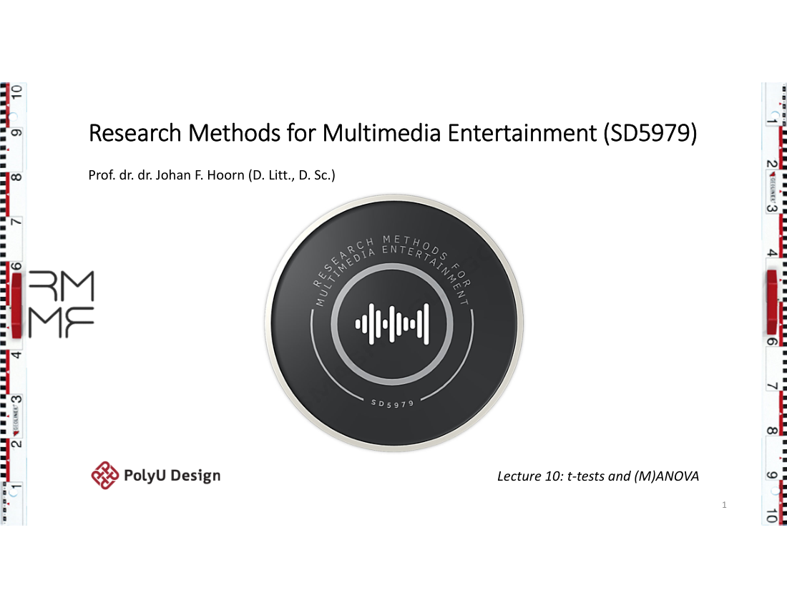
多媒体娱乐研究方法（Research Methods）（SD5979）
Prof. dr. dr. Johan F. Hoorn (D. Litt., D. Sc.)
第 10 讲：t 检验（t-tests）与（多元）方差分析（(M)ANOVA）
英文检索原文（公式与版式请看左侧原图）
Research Methods for Multimedia Entertainment (SD5979) Prof. dr. dr. Johan F. Hoorn (D. Litt., D. Sc.) Lecture 10: t-tests and (M)ANOVA 1

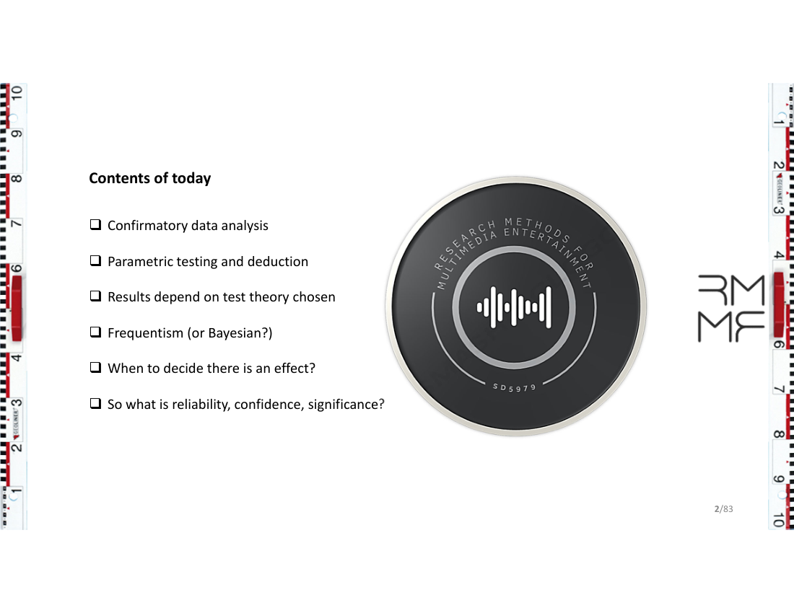
今日内容（Contents of today）
- 验证性数据分析（Confirmatory data analysis）
- 参数检验（Parametric testing）与演绎（deduction）
- 结果取决于所选的检验理论（test theory）
- 频率主义（Frequentism）（还是贝叶斯主义（Bayesian）？）
- 何时判定存在效应（effect）？
- 那么，什么是信度（reliability）、置信度（confidence）、显著性（significance）？
英文检索原文（公式与版式请看左侧原图）
Contents of today Confirmatory data analysis Parametric testing and deduction Results depend on test theory chosen Frequentism (or Bayesian?) When to decide there is an effect? So what is reliability, confidence, significance? 2/83

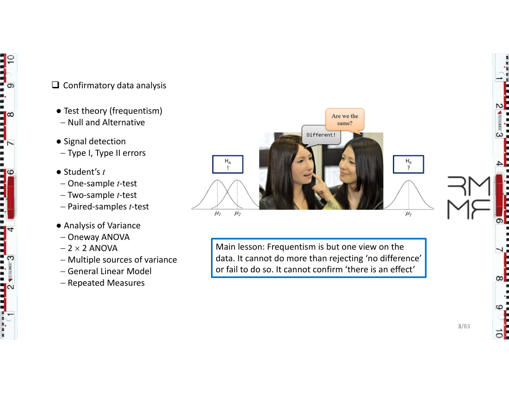
验证性数据分析（Confirmatory data analysis）
- 检验理论（Test theory）（频率主义（frequentism））
- 零假设（Null）与备择假设（Alternative）
- 信号检测（Signal detection）
- I 类错误（Type I）、II 类错误（Type II errors）
- 司徒顿 t（Student’s t）
- 单样本 t 检验（One-sample t-test）
- 双样本 t 检验（Two-sample t-test）
- 配对样本 t 检验（Paired-samples t-test）
- 方差分析（Analysis of Variance）
- 单因素 ANOVA（Oneway ANOVA）
- 2×2 方差分析（2 × 2 ANOVA）
- 多个变异来源（Multiple sources of variance）
- 一般线性模型（General Linear Model）
- 重复测量（Repeated Measures）
核心结论（Main lesson）：频率主义（Frequentism）只是看待数据的一种视角。它最多只能拒绝（rejecting）「无差异」或未能做到这一点，而无法证实「存在效应」。
英文检索原文（公式与版式请看左侧原图）
Confirmatory data analysis ●Test theory (frequentism) Null and Alternative ●Signal detection Type I, Type II errors ●Student’s t One-sample t-test Two-sample t-test Paired-samples t-test ●Analysis of Variance Oneway ANOVA 2 2 ANOVA Multiple sources of variance General Linear Model Repeated Measures Main lesson: Frequentism is but one view on the data. It cannot do more than rejecting ‘no difference’ or fail to do so. It cannot confirm ‘there is an effect’ 3/83

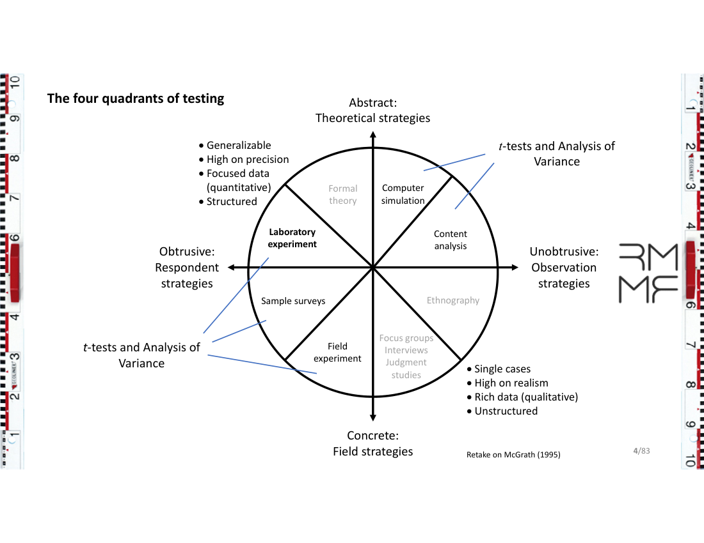
检验的四个象限（The four quadrants of testing）
坐标维度：
- 具体：实地策略（Field strategies）（Concrete: Field strategies）
- 抽象：理论策略（Theoretical strategies）（Abstract: Theoretical strategies）
- 干预式：受访者策略（Respondent strategies）（Obtrusive: Respondent strategies）
- 非干预式：观察策略（Observation strategies）（Unobtrusive: Observation strategies）
象限中的研究策略与方法：
- 实验室实验（Laboratory experiment）
- 抽样调查（Sample surveys）
- 形式理论（Formal theory）
- 计算机模拟（Computer simulation）
- 民族志（Ethnography）
- 内容分析（Content analysis）
- 实地实验（Field experiment）
- 焦点小组（Focus groups）
- 访谈（Interviews）
- 判断研究（Judgment studies）
特征对比：
- 个案（Single cases）
- 真实感（realism）高
- 丰富的数据（质性（qualitative））
- 非结构化（Unstructured）
- 可推广性（Generalizable）
- 精确度（precision）高
- 聚焦的数据（量化（quantitative））
- 结构化（Structured）
图中标注：
- t 检验（t-tests）与方差分析（Analysis of Variance）（标注两处）
改编自 McGrath (1995)（Retake on McGrath (1995)）
英文检索原文（公式与版式请看左侧原图）
The four quadrants of testing Concrete: Field strategies Abstract: Theoretical strategies Laboratory experiment Sample surveys Obtrusive: Respondent strategies Unobtrusive: Observation strategies Formal theory Computer simulation Ethnography Content analysis Field experiment Focus groups Interviews Judgment studies Single cases High on realism Rich data (qualitative) Unstructured Generalizable High on precision Focused data (quantitative) Structured Retake on McGrath (1995) t-tests and Analysis of Variance t-tests and Analysis of Variance 4/83

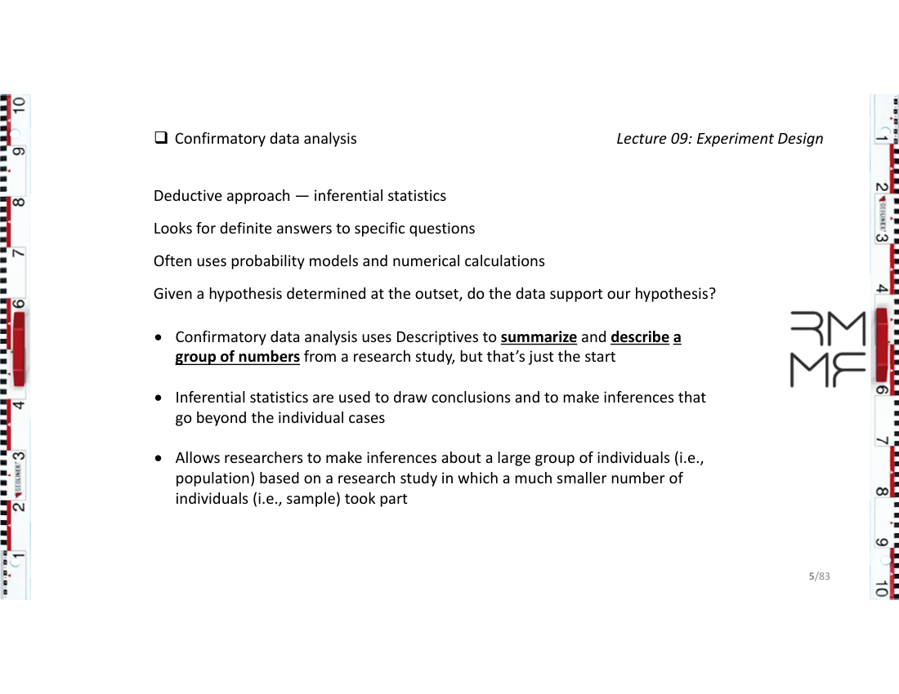
验证性数据分析（Confirmatory data analysis）
演绎法（Deductive approach） —— 推论统计（inferential statistics）
为特定问题寻找确定答案
通常使用概率模型（probability models）与数值计算
给定最初确定的假设（hypothesis），数据是否支持我们的假设（hypothesis）？
- 验证性数据分析（Confirmatory data analysis）使用描述性统计（Descriptives）来汇总并描述一项研究中的一组数字，但这仅仅是开始
- 推论统计（Inferential statistics）用于得出结论，并做出超越个案（individual cases）的推论（inferences）
- 使研究者能够基于一项仅有少得多数量个体（即样本（sample））参与的研究，对一个庞大的个体群体（即总体（population））做出推论（inferences）
第 09 讲：实验设计（Experiment Design）（Lecture 09: Experiment Design）
英文检索原文（公式与版式请看左侧原图）
Confirmatory data analysis Deductive approach — inferential statistics Looks for definite answers to specific questions Often uses probability models and numerical calculations Given a hypothesis determined at the outset, do the data support our hypothesis? Confirmatory data analysis uses Descriptives to summarize and describe a group of numbers from a research study, but that’s just the start Inferential statistics are used to draw conclusions and to make inferences that go beyond the individual cases Allows researchers to make inferences about a large group of individuals (i.e., population) based on a research study in which a much smaller number of individuals (i.e., sample) took part Lecture 09: Experiment Design 5/83

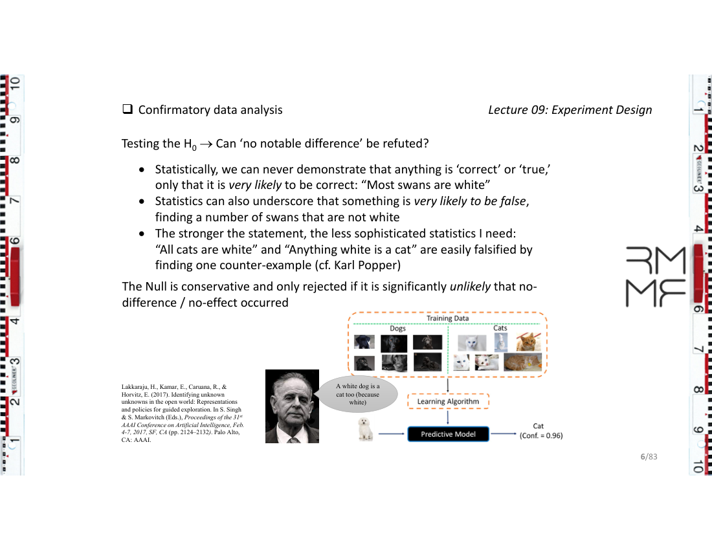
验证性数据分析（Confirmatory data analysis）
检验 零假设（H0） → 「无显著差异」能否被驳斥？
- 在统计学（Statistically）上，我们永远无法证明任何事物是「正确」或「真实」的，只能证明它极有可能是正确的：「大多数天鹅是白色的」
- 统计学（Statistics）也可以通过找到若干非白色的天鹅，来凸显某件事极有可能是错误的
- 陈述越绝对，我所需的统计（statistics）就越简单：「所有的猫都是白色的」以及「任何白色的东西都是猫」，只需找到一个反例（counter-example）就能轻易被证伪（falsified）（参见 Karl Popper）
零假设（The Null）是保守的，只有当「无差异／无效应」的发生显著（significantly）不太可能时，才会被拒绝（rejected）
图注：白色的狗也是猫（因为是白色的）
参考文献（References）
Lakkaraju, H., Kamar, E., Caruana, R., & Horvitz, E. (2017). Identifying unknown unknowns in the open world: Representations and policies for guided exploration. In S. Singh & S. Markovitch (Eds.), Proceedings of the 31st AAAI Conference on Artificial Intelligence, Feb. 4-7, 2017, SF, CA (pp. 2124–2132). Palo Alto, CA: AAAI.
第 09 讲：实验设计（Experiment Design）（Lecture 09: Experiment Design）
英文检索原文（公式与版式请看左侧原图）
Confirmatory data analysis Testing the H0 Can ‘no notable difference’ be refuted? Statistically, we can never demonstrate that anything is ‘correct’ or ‘true,’ only that it is very likely to be correct: “Most swans are white” Statistics can also underscore that something is very likely to be false, finding a number of swans that are not white The stronger the statement, the less sophisticated statistics I need: “All cats are white” and “Anything white is a cat” are easily falsified by finding one counter-example (cf. Karl Popper) The Null is conservative and only rejected if it is significantly unlikely that no- difference / no-effect occurred A white dog is a cat too (because white) Lakkaraju, H., Kamar, E., Caruana, R., & Horvitz, E. (2017). Identifying unknown unknowns in the open world: Representations and policies for guided exploration. In S. Singh & S. Markovitch (Eds.), Proceedings of the 31st AAAI Conference on Artificial Intelligence, Feb. 4-7, 2017, SF, CA (pp. 2124–2132). Palo Alto, CA: AAAI. Lecture 09: Experiment Design 6/83

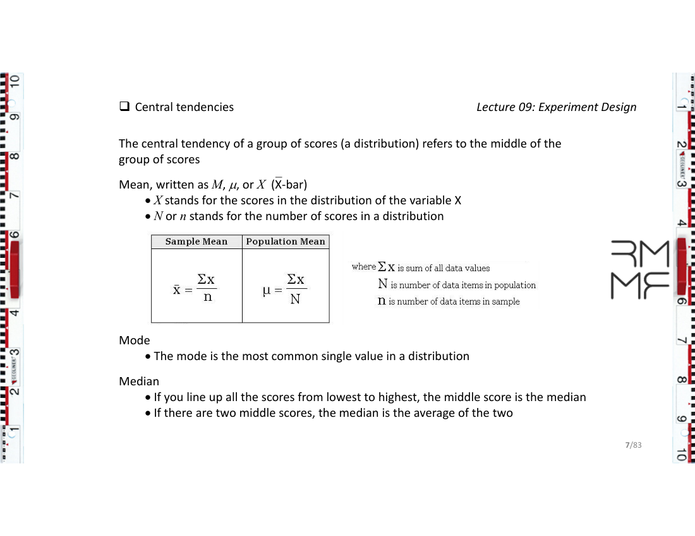
集中趋势（Central tendencies）
一组分数（一个分布（distribution））的集中趋势（central tendency）指这组分数的中间位置
均值（Mean），写作 M、μ 或 X̄（X-bar）
- X 代表变量（variable） X 分布（distribution）中的分数
- N 或 n 代表一个分布（distribution）中的分数数量
众数（Mode）
- 众数（mode）是一个分布（distribution）中最常出现的单一数值
中位数（Median）
- 如果将所有分数从低到高排列，最中间的分数就是中位数（median）
- 如果有两个中间分数，则中位数（median）是这两个分数的平均值
第 09 讲：实验设计（Experiment Design）（Lecture 09: Experiment Design）
英文检索原文（公式与版式请看左侧原图）
The central tendency of a group of scores (a distribution) refers to the middle of the group of scores Mean, written as M, , or X (X-bar) X stands for the scores in the distribution of the variable X N or n stands for the number of scores in a distribution Mode The mode is the most common single value in a distribution Median If you line up all the scores from lowest to highest, the middle score is the median If there are two middle scores, the median is the average of the two Central tendencies _ Lecture 09: Experiment Design 7/83

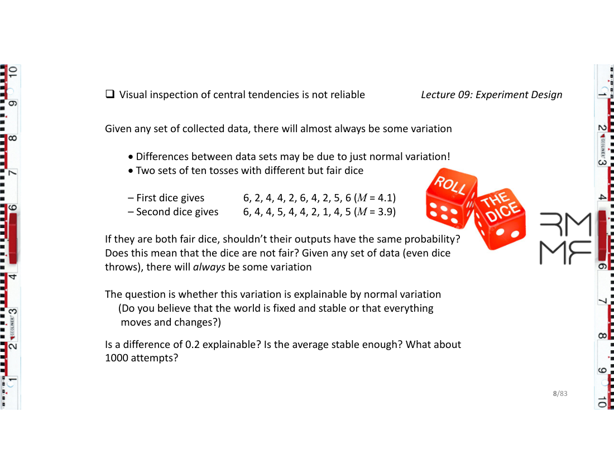
对集中趋势（central tendencies）的目测检查并不可靠
对于任何收集到的数据集，几乎总会存在一些变异（variation）
- 数据集之间的差异可能仅仅是由正常变异（normal variation）引起的！
- 用两个不同但公平的骰子各掷十次的两组结果
- 第一个骰子的结果为
6, 2, 4, 4, 2, 6, 4, 2, 5, 6（均值（M） = 4.1）
- 第二个骰子的结果为
6, 4, 4, 5, 4, 4, 2, 1, 4, 5（均值（M） = 3.9）
如果两个都是公平的骰子，它们的结果难道不应该具有相同的概率（probability）吗？这是否意味着骰子并不公平？对于任何一组数据（即使是掷骰子），总会存在一定的变异（variation）
问题在于这种变异（variation）是否能由正常变异（normal variation）来解释（你相信世界是固定且稳定的，还是一切都在运动和变化之中？）
0.2 的差异是可以解释的吗？平均值足够稳定吗？如果尝试 1000 次呢？
第 09 讲：实验设计（Experiment Design）（Lecture 09: Experiment Design）
英文检索原文（公式与版式请看左侧原图）
Visual inspection of central tendencies is not reliable Given any set of collected data, there will almost always be some variation Differences between data sets may be due to just normal variation! Two sets of ten tosses with different but fair dice – First dice gives 6, 2, 4, 4, 2, 6, 4, 2, 5, 6 (M = 4.1) – Second dice gives 6, 4, 4, 5, 4, 4, 2, 1, 4, 5 (M = 3.9) If they are both fair dice, shouldn’t their outputs have the same probability? Does this mean that the dice are not fair? Given any set of data (even dice throws), there will always be some variation The question is whether this variation is explainable by normal variation (Do you believe that the world is fixed and stable or that everything moves and changes?) Is a difference of 0.2 explainable? Is the average stable enough? What about 1000 attempts? Lecture 09: Experiment Design 8/83

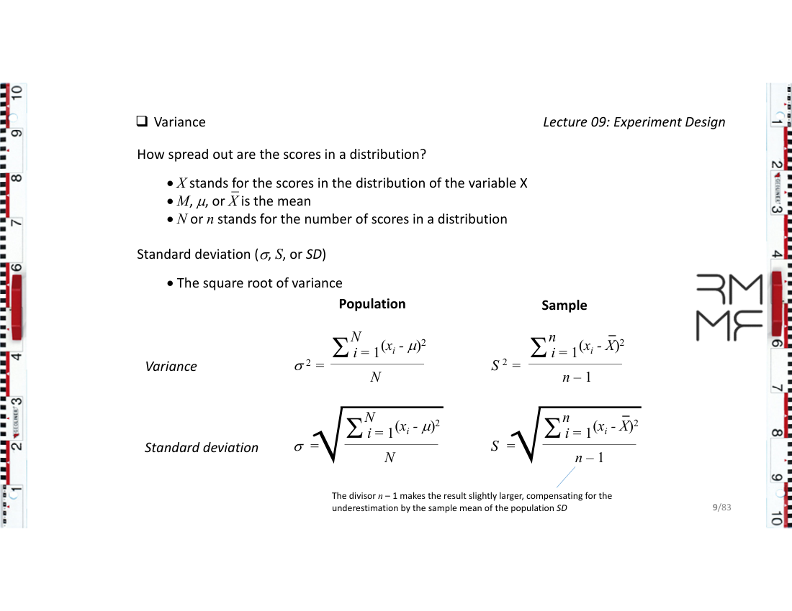
方差（Variance）
一个分布（distribution）中的分数有多分散？
- X 代表变量（variable） X 分布（distribution）中的分数
- M、μ 或 X̄ 是均值（mean）
- N 或 n 代表一个分布（distribution）中的分数数量
标准差（Standard deviation）（σ、S 或 SD）
- 方差（variance）的平方根
公式对照：
- 总体（Population）：
- 方差（Variance）：σ2 = ∑i=1N (xi - μ)2N
- 标准差（Standard deviation）：σ = √∑i=1N (xi - μ)2N
- 样本（Sample）：
- 方差（Variance）：S2 = ∑i=1n (xi - X)2n - 1
- 标准差（Standard deviation）：S = √∑i=1n (xi - X)2n - 1
除数 n - 1 使结果略微增大，从而补偿样本均值（sample mean）对总体标准差（population SD）的低估
第 09 讲：实验设计（Experiment Design）（Lecture 09: Experiment Design）
英文检索原文（公式与版式请看左侧原图）
How spread out are the scores in a distribution? X stands for the scores in the distribution of the variable X M, , or X is the mean N or n stands for the number of scores in a distribution Standard deviation (, S, or SD) The square root of variance Variance Variance Standard deviation Population Sample 2 = i = 1 N (xi - )2 N = i = 1 N (xi - )2 N S 2 = i = 1 n (xi - X)2 S = i = 1 n (xi - X)2 n – 1 _ _ _ n – 1 The divisor n – 1 makes the result slightly larger, compensating for the underestimation by the sample mean of the population SD Lecture 09: Experiment Design 9/83

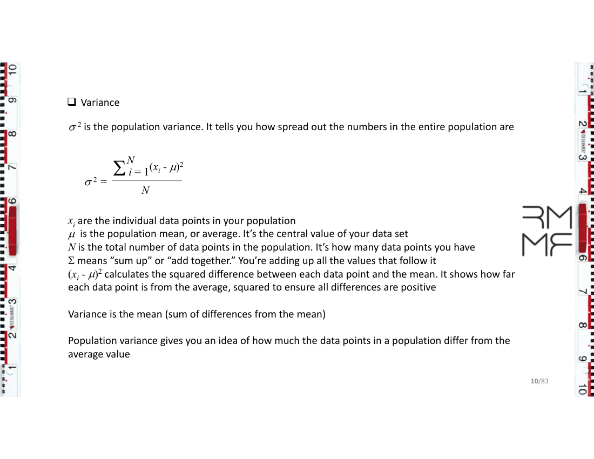
方差（Variance）
- σ2 是总体方差（population variance）。它告诉你整个总体（population）中数值的分散程度
- xi 是你总体（population）中的各个数据点（data points）
- μ 是总体均值（population mean），即平均值。它是数据集的中心值
- N 是总体（population）中数据点（data points）的总数。即你拥有多少个数据点（data points）
- Σ 意为「求和」或「相加」。即把其后的所有数值加起来
- (xi - μ)2 计算每个数据点（data point）与均值（mean）之间的平方差（squared difference）。它显示每个数据点（data point）距离平均值有多远，取平方以确保所有差值均为正数
方差（Variance）即均值（与均值（mean）之差的总和）
总体方差（Population variance）让你了解总体（population）中的数据点（data points）与平均值之间的差异程度
英文检索原文（公式与版式请看左侧原图）
2 is the population variance. It tells you how spread out the numbers in the entire population are xi are the individual data points in your population is the population mean, or average. It’s the central value of your data set N is the total number of data points in the population. It’s how many data points you have means “sum up” or “add together.” You’re adding up all the values that follow it (xi - )2 calculates the squared difference between each data point and the mean. It shows how far each data point is from the average, squared to ensure all differences are positive Variance is the mean (sum of differences from the mean) Population variance gives you an idea of how much the data points in a population differ from the average value 2 = i = 1 N (xi - )2 N Variance 10/83

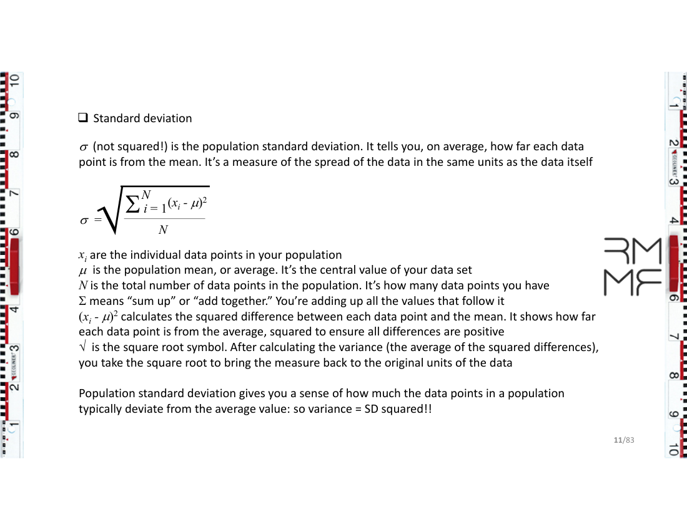
标准差（Standard deviation）
- （不带平方！）是总体标准差（population standard deviation）。它告诉你每个数据点（data point）平均距离均值（mean）有多远。它是数据离散程度（spread）的度量，其单位与数据本身的单位相同
xi是你总体（population）中的各个数据点（data points）μ是总体均值（population mean），即平均值。它是你数据集的中心值（central value）N是总体（population）中数据点（data points）的总数。即你拥有多少个数据点Σ的意思是「求和」或「加总」。你要把跟在它后面的所有数值加起来(xi - μ)²计算每个数据点（data point）与均值（mean）之间的平方差（squared difference）。它显示每个数据点距离平均值有多远，取平方是为了确保所有差值都是正数- 是平方根（square root）符号。在计算出方差（variance）（平方差（squared differences）的平均值）之后，你再开平方根，以将该度量还原回数据的原始单位
- 总体标准差（Population standard deviation）让你直观了解总体（population）中的数据点通常偏离平均值多少：因此方差（variance） = 标准差（SD） 的平方！！
公式：
= Σ (i = 1 到 N) (xi - μ)² / N
英文检索原文（公式与版式请看左侧原图）
(not squared!) is the population standard deviation. It tells you, on average, how far each data point is from the mean. It’s a measure of the spread of the data in the same units as the data itself xi are the individual data points in your population is the population mean, or average. It’s the central value of your data set N is the total number of data points in the population. It’s how many data points you have means “sum up” or “add together.” You’re adding up all the values that follow it (xi - )2 calculates the squared difference between each data point and the mean. It shows how far each data point is from the average, squared to ensure all differences are positive is the square root symbol. After calculating the variance (the average of the squared differences), you take the square root to bring the measure back to the original units of the data Population standard deviation gives you a sense of how much the data points in a population typically deviate from the average value: so variance = SD squared!! Standard deviation = i = 1 N (xi - )2 N 11/83

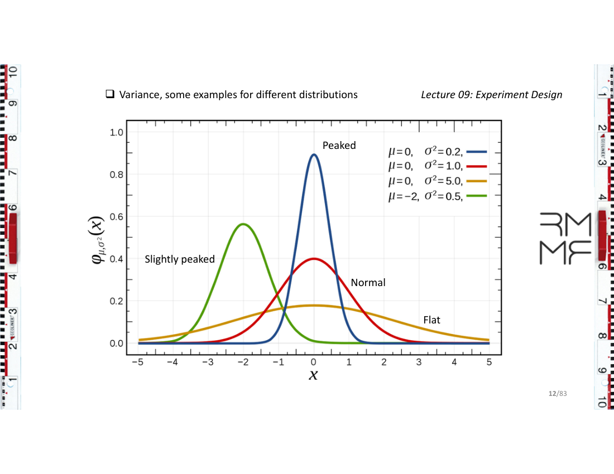
方差（Variance），不同分布（distributions）的一些例子
- 尖峰（Peaked）
- 正态（Normal）
- 平阔（Flat）
- 略呈尖峰（Slightly peaked）
第 09 讲：实验设计（Experiment Design）
英文检索原文（公式与版式请看左侧原图）
Variance, some examples for different distributions Peaked Normal Flat Slightly peaked Lecture 09: Experiment Design 12/83

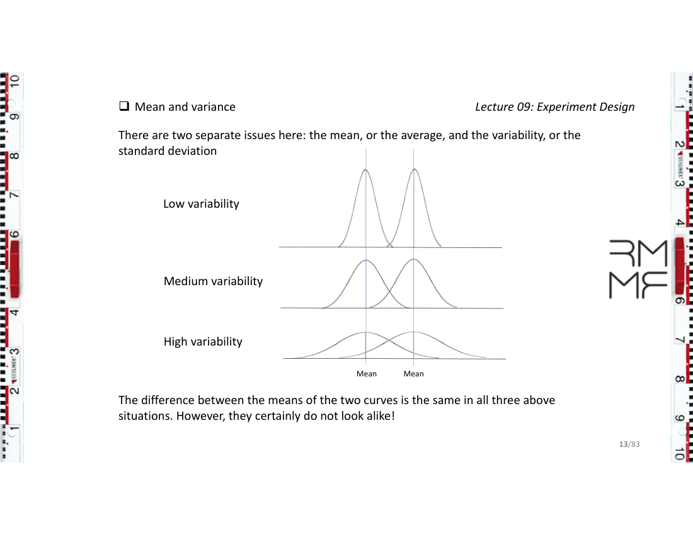
均值（Mean）与方差（variance）
- 这里有两个独立的问题：均值（mean）（即平均值），以及变异性（variability）（即标准差（standard deviation））
- 在上面这三种情况中，两条曲线均值（means）之间的差异是相同的。然而，它们看起来显然截然不同！
图示标注：
- 均值（Mean）
- 均值（Mean）
- 低变异性（Low variability）
- 中等变异性（Medium variability）
- 高变异性（High variability）
第 09 讲：实验设计（Experiment Design）
英文检索原文（公式与版式请看左侧原图）
Mean and variance There are two separate issues here: the mean, or the average, and the variability, or the standard deviation The difference between the means of the two curves is the same in all three above situations. However, they certainly do not look alike! Mean Mean Low variability Medium variability High variability Lecture 09: Experiment Design 13/83

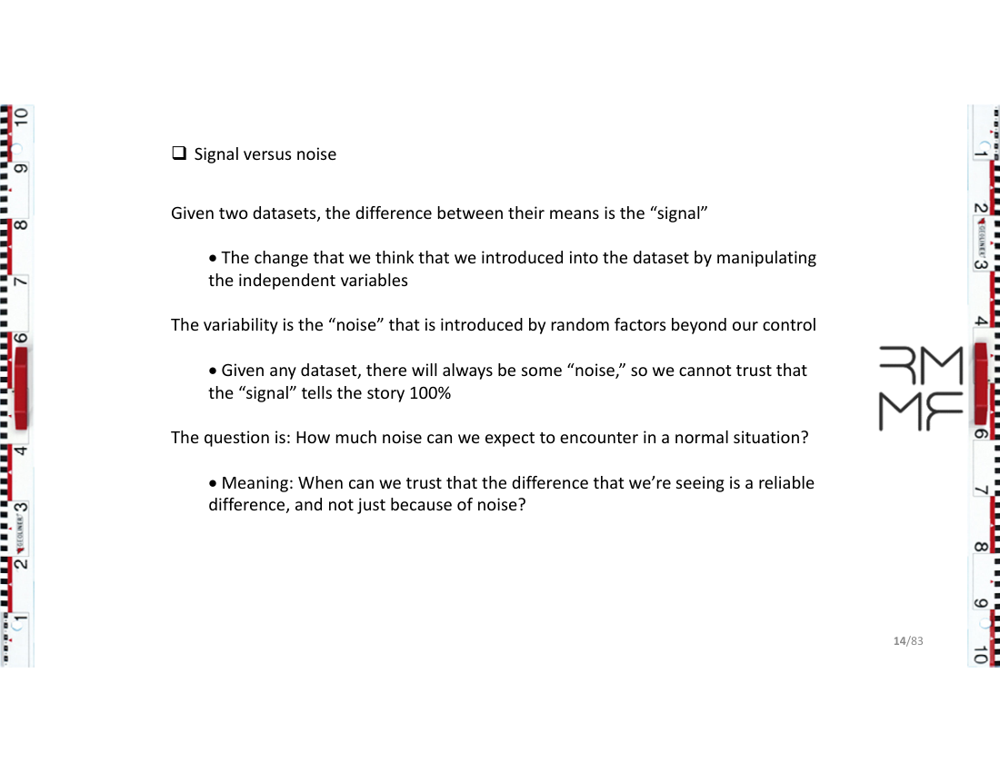
信号（Signal）与噪声（noise）的对比
- 给定两个数据集，它们均值（means）之间的差异就是「信号（signal）」
- 即我们认为自己通过操纵自变量（independent variables）而引入数据集的变化
- 变异性（variability）是由我们无法控制的随机因素（random factors）所引入的「噪声（noise）」
- 给定任何数据集，总是会存在一些「噪声（noise）」，因此我们无法 100% 相信「信号（signal）」就说明了全部情况
- 问题是：在正常情况下，我们可以预期会遇到多少噪声（noise）？
- 意思是：我们什么时候才能相信自己看到的差异是可靠的差异（reliable difference），而不仅仅是由噪声（noise）造成的？
英文检索原文（公式与版式请看左侧原图）
Signal versus noise Given two datasets, the difference between their means is the “signal” The change that we think that we introduced into the dataset by manipulating the independent variables The variability is the “noise” that is introduced by random factors beyond our control Given any dataset, there will always be some “noise,” so we cannot trust that the “signal” tells the story 100% The question is: How much noise can we expect to encounter in a normal situation? Meaning: When can we trust that the difference that we’re seeing is a reliable difference, and not just because of noise? 14/83

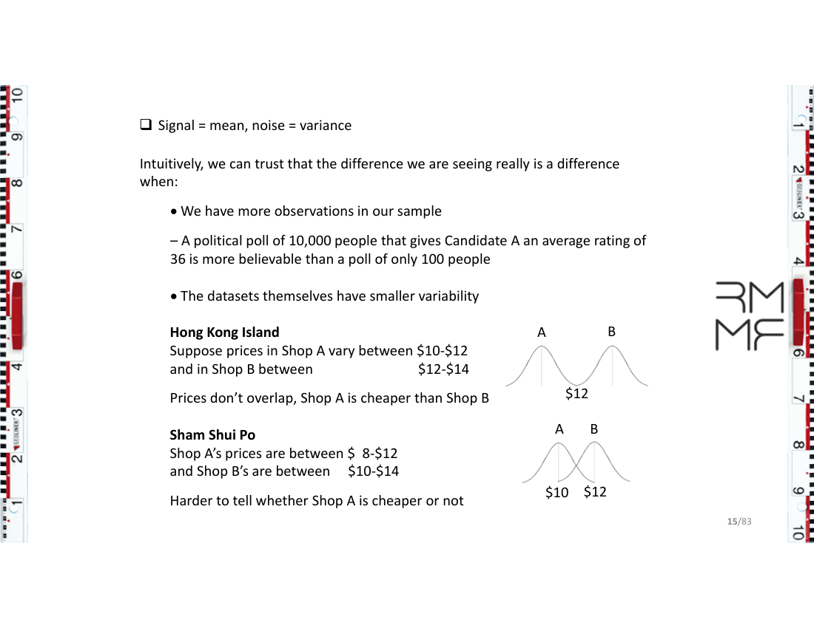
信号（Signal） = 均值（mean），噪声（noise） = 方差（variance）
- 直观地说，在以下情况下，我们可以相信我们看到的差异确实是一个真正的差异：
- 我们的样本（sample）中有更多的观测值（observations）
- 一项调查 10,000 人并得出候选人 A 平均评分（rating）为 36 的政治民意调查，比仅调查 100 人的民意调查更可信
- 数据集本身具有更小的变异性（variability）
香港岛（Hong Kong Island）：
- 假设 A 店的价格在 $10–$12 之间波动，而 B 店在 $12–$14 之间波动
- 价格没有重叠，A 店比 B 店更便宜
深水埗（Sham Shui Po）：
- A 店的价格在 $8–$12 之间，而 B 店在 $10–$14 之间
- 更难判断 A 店是否更便宜
图示标注：A、B、A、B、$12、$12、$10
英文检索原文（公式与版式请看左侧原图）
Signal = mean, noise = variance Intuitively, we can trust that the difference we are seeing really is a difference when: We have more observations in our sample – A political poll of 10,000 people that gives Candidate A an average rating of 36 is more believable than a poll of only 100 people The datasets themselves have smaller variability Hong Kong Island Suppose prices in Shop A vary between $10-$12 and in Shop B between $12-$14 Prices don’t overlap, Shop A is cheaper than Shop B Sham Shui Po Shop A’s prices are between $ 8-$12 and Shop B’s are between $10-$14 Harder to tell whether Shop A is cheaper or not A B A B $12 $12 $10 15/83

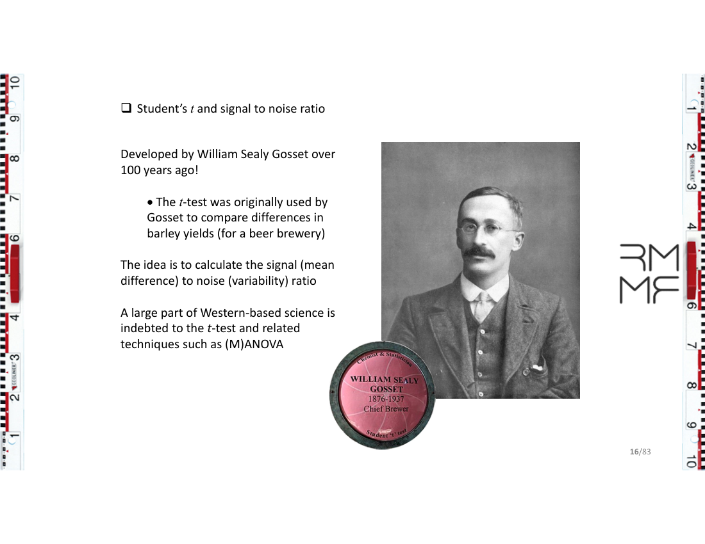
司徒顿 t 检验（Student’s t） 与信噪比（signal to noise ratio）
- 由 William Sealy Gosset 于 100 多年前创立！
- t 检验（t-test）最初被 Gosset 用来比较大麦产量的差异（用于一家啤酒酿造厂）
- 其核心思想是计算信号（signal）（均值差（mean difference））与噪声（noise）（变异性（variability））的比率
- 西方科学很大一部分都得益于t 检验（t-test）以及诸如（多元）方差分析（(M)ANOVA）等相关技术
英文检索原文（公式与版式请看左侧原图）
Student’s t and signal to noise ratio Developed by William Sealy Gosset over 100 years ago! The t-test was originally used by Gosset to compare differences in barley yields (for a beer brewery) The idea is to calculate the signal (mean difference) to noise (variability) ratio A large part of Western-based science is indebted to the t-test and related techniques such as (M)ANOVA 16/83

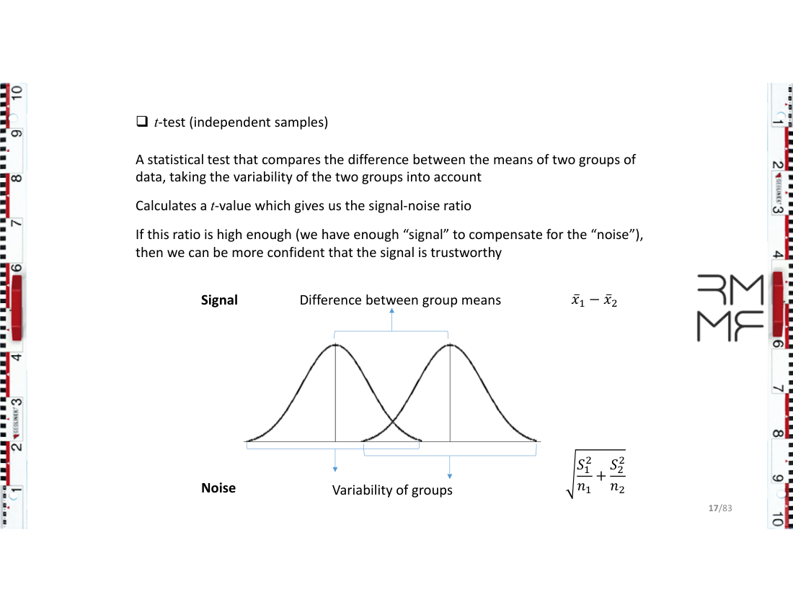
独立样本 t 检验（t-test (independent samples)）
- 一种统计检验（statistical test），在考虑两组数据变异性（variability）的前提下，比较两组数据均值（means）之间的差异
- 计算出一个 t 值（t-value），从而为我们提供信噪比（signal-noise ratio）
- 如果该比率足够高（我们有足够的「信号（signal）」来抵消「噪声（noise）」），那么我们就可以更有把握地认为该信号（signal）是值得信赖的
公式说明：
- 组间均值差（Difference between group means） = 信号（Signal）（
x̄₁ - x̄₂） - 组内变异性（Variability of groups） = 噪声（Noise）（
S₁² / n₁、S₂² / n₂）
英文检索原文（公式与版式请看左侧原图）
A statistical test that compares the difference between the means of two groups of data, taking the variability of the two groups into account Calculates a t-value which gives us the signal-noise ratio If this ratio is high enough (we have enough “signal” to compensate for the “noise”), then we can be more confident that the signal is trustworthy t-test (independent samples) Difference between group means Variability of groups Signal Noise 𝑥̅ଵെ𝑥̅ଶ 𝑆ଵ ଶ 𝑛ଵ 𝑆ଶ ଶ 𝑛ଶ 17/83

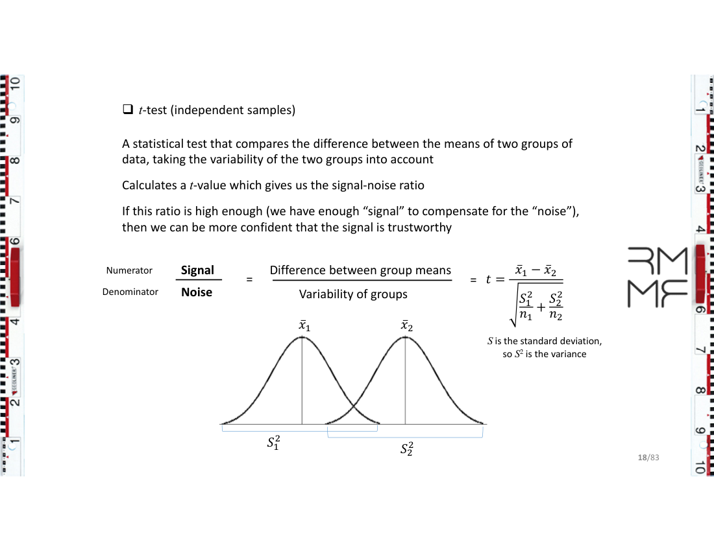
独立样本 t 检验（t-test (independent samples)）
- 一种统计检验（statistical test），在考虑两组数据变异性（variability）的前提下，比较两组数据均值（means）之间的差异
- 计算出一个 t 值（t-value），从而为我们提供信噪比（signal-noise ratio）
- 如果该比率足够高（我们有足够的「信号（signal）」来抵消「噪声（noise）」），那么我们就可以更有把握地认为该信号（signal）是值得信赖的
公式与标注：
- 组间均值差（Difference between group means） = 信号（Signal） = 分子（Numerator）
- 组内变异性（Variability of groups） = 噪声（Noise） = 分母（Denominator）
t = (x̄₁ - x̄₂)/(S₁² / n₁, S₂² / n₂)S是标准差（standard deviation），因此S²是方差（variance）- 符号标注：
x̄₁、x̄₂、S₁²、S₂²
英文检索原文（公式与版式请看左侧原图）
A statistical test that compares the difference between the means of two groups of data, taking the variability of the two groups into account Calculates a t-value which gives us the signal-noise ratio If this ratio is high enough (we have enough “signal” to compensate for the “noise”), then we can be more confident that the signal is trustworthy t-test (independent samples) Difference between group means Variability of groups Signal Noise 𝑡ൌ𝑥̅ଵെ𝑥̅ଶ 𝑆ଵ ଶ 𝑛ଵ𝑆ଶ ଶ 𝑛ଶ = = Numerator Denominator S is the standard deviation, so S2 is the variance 𝑥̅ଵ 𝑥̅ଶ 𝑆ଵ ଶ 𝑆ଶ ଶ 18/83

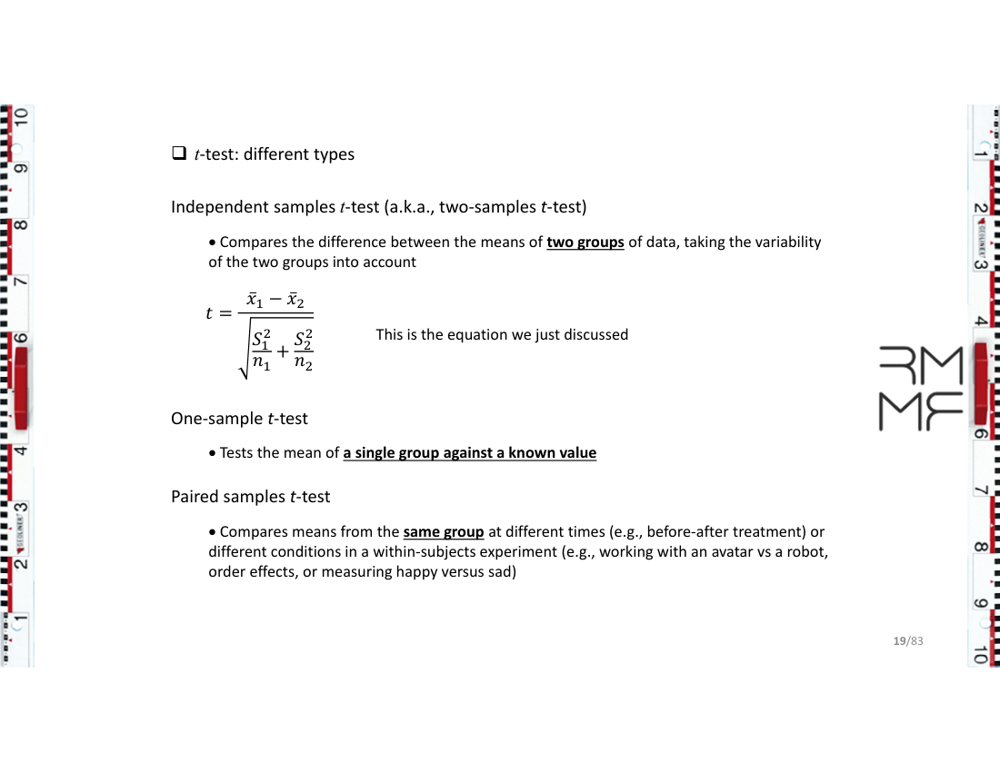
t 检验（t-test）：不同类型
- 独立样本 t 检验（Independent samples t-test）（又称双样本 t 检验（two-samples t-test））
- 在考虑两组数据变异性（variability）的前提下，比较两组数据均值（means）之间的差异
- 单样本 t 检验（One-sample t-test）
- 将单个组别的均值（mean）与一个已知值进行检验
- 配对样本 t 检验（Paired samples t-test）
- 比较同一组别在不同时间点（例如，处理前后）或在一项被试内实验（within-subjects experiment）中不同条件下的均值（means）（例如，与虚拟化身 vs 机器人合作、顺序效应（order effects），或测量快乐 vs 悲伤）
公式标注：
t = (x̄₁ - x̄₂)/(S₁² / n₁, S₂² / n₂)：这是我们刚刚讨论过的公式
英文检索原文（公式与版式请看左侧原图）
t-test: different types Independent samples t-test (a.k.a., two-samples t-test) Compares the difference between the means of two groups of data, taking the variability of the two groups into account One-sample t-test Tests the mean of a single group against a known value Paired samples t-test Compares means from the same group at different times (e.g., before-after treatment) or different conditions in a within-subjects experiment (e.g., working with an avatar vs a robot, order effects, or measuring happy versus sad) 𝑡ൌ𝑥̅ଵെ𝑥̅ଶ 𝑆ଵ ଶ 𝑛ଵ𝑆ଶ ଶ 𝑛ଶ This is the equation we just discussed 19/83

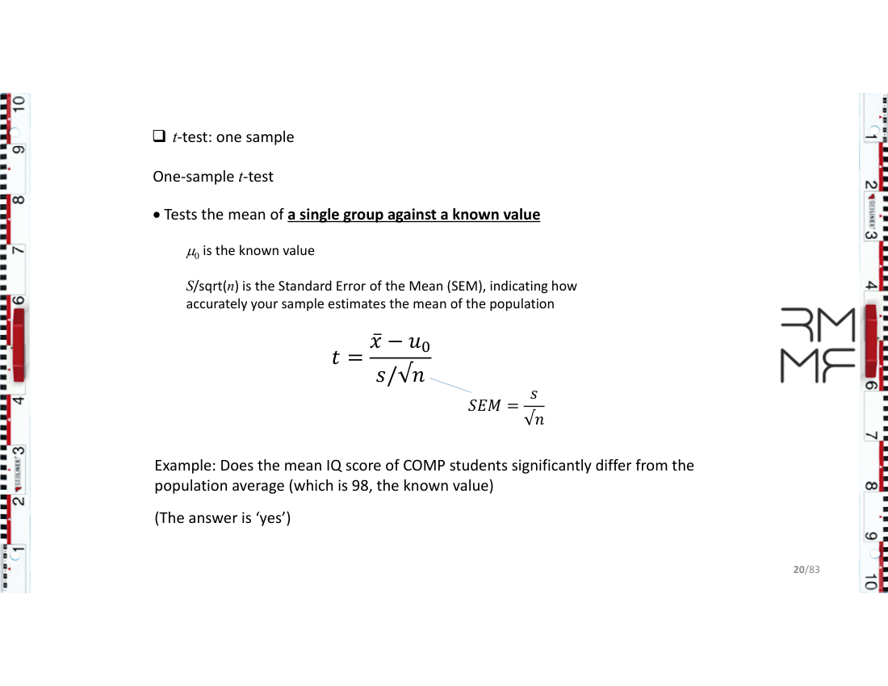
单样本 t 检验（t-test: one sample）
- 单样本 t 检验（One-sample t-test）
- 将单个组别的均值（mean）与一个已知值进行检验
μ₀是已知值S/sqrt(n)是均值标准误（Standard Error of the Mean, SEM），用于指示你的样本（sample）对总体（population）均值估计的准确程度
公式：
SEM = s / √nt = (x̄ - u) / (s / √n)
例子：
- 例子：COMP 学生的平均 IQ 分数是否与总体平均值（population average）（即 98，已知值）存在显著（significantly）差异
- （答案是「是（yes）」）
英文检索原文（公式与版式请看左侧原图）
One-sample t-test Tests the mean of a single group against a known value 0 is the known value S/sqrt(n) is the Standard Error of the Mean (SEM), indicating how accurately your sample estimates the mean of the population t-test: one sample 𝑆𝐸𝑀ൌ𝑠 √𝑛 𝑡ൌ𝑥̅ െ𝑢 𝑠/√𝑛 Example: Does the mean IQ score of COMP students significantly differ from the population average (which is 98, the known value) (The answer is ‘yes’) 20/83

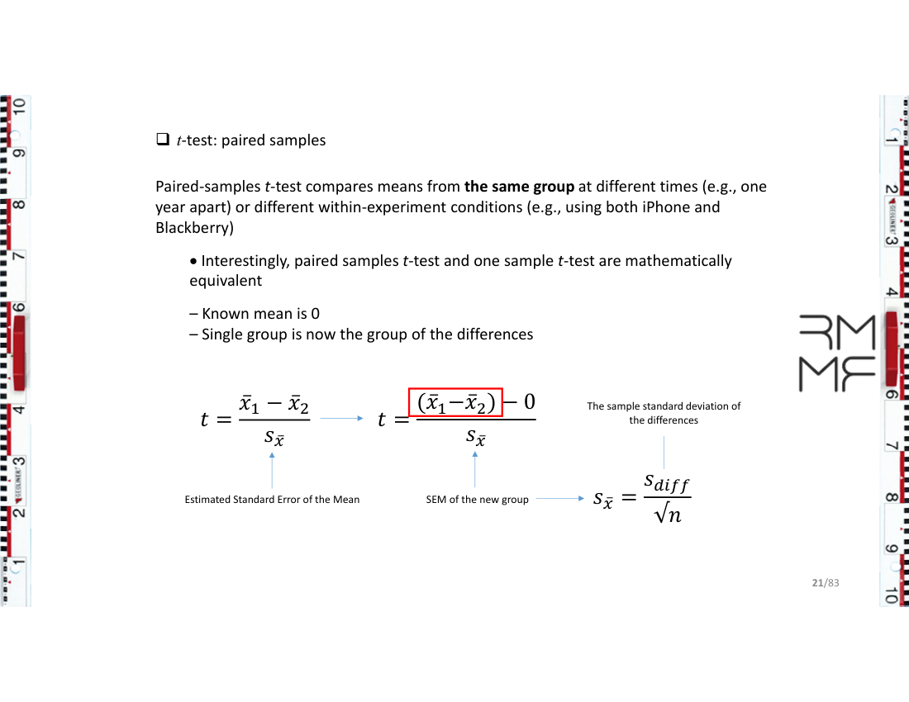
配对样本 t 检验（t-test: paired samples）
- 配对样本 t 检验（Paired-samples t-test）比较同一组别在不同时间点（例如，相隔一年）或不同实验内条件（within-experiment conditions）（例如，同时使用 iPhone 和 Blackberry）下的均值（means）
- 有趣的是，配对样本 t 检验（paired samples t-test）与单样本 t 检验（one sample t-test）在数学上是等价的
- 已知均值（mean）为 0
- 单一组别现在是由差值组成的组别
公式与标注：
t = (x̄₁ - x̄₂) / s_x̄- 估计的均值标准误（Estimated Standard Error of the Mean）：
s_x̄ = s_d / √n t = ((x̄₁ - x̄₂) - 0) / s_x̄s_x̄：新组别的 均值标准误（SEM）s_d：差值的样本标准差（sample standard deviation）
英文检索原文（公式与版式请看左侧原图）
t-test: paired samples Paired-samples t-test compares means from the same group at different times (e.g., one year apart) or different within-experiment conditions (e.g., using both iPhone and Blackberry) Interestingly, paired samples t-test and one sample t-test are mathematically equivalent – Known mean is 0 – Single group is now the group of the differences 𝑡ൌ𝑥̅ଵെ𝑥̅ଶ 𝑠௫̅ Estimated Standard Error of the Mean 𝑠௫̅ ൌ𝑠ௗ √𝑛 𝑡ൌሺ𝑥̅ଵെ𝑥̅ଶሻെ0 𝑠௫̅ SEM of the new group The sample standard deviation of the differences 21/83

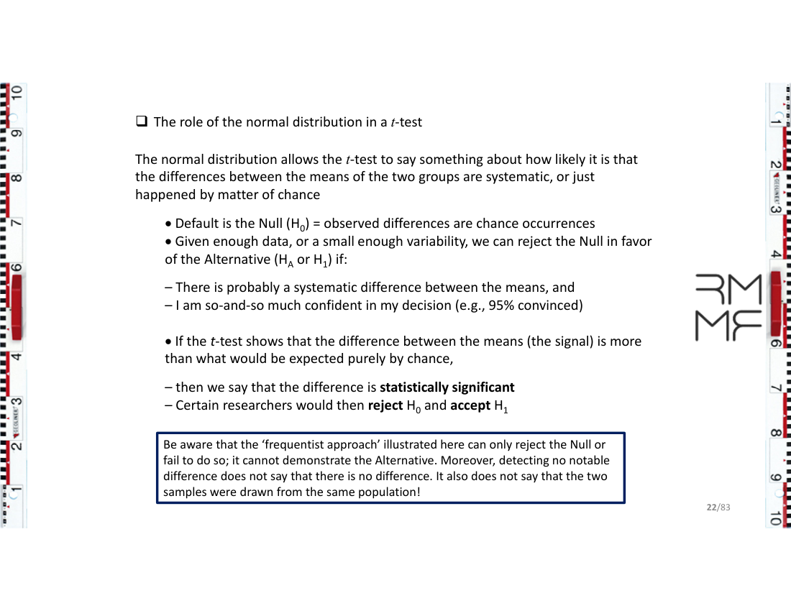
正态分布（normal distribution）在 t 检验（t-test）中的作用
正态分布（normal distribution）使 t 检验（t-test）能够判断两组均值（means）之间的差异究竟是系统性的（systematic），还是仅仅由随机偶然（chance）导致的
- 默认设定是零假设（Null, H0） = 观测到的差异是偶然事件（chance occurrences）
- 如果有足够的数据，或者变异性（variability）足够小，当满足以下条件时，我们就可以拒绝零假设（Null）而支持备择假设（Alternative, HA or H1）：
- 两个均值（means）之间很可能存在系统性差异（systematic difference），并且
- 我对自己的判断有相当程度的置信度（confident）（例如，95% 确信）
- 如果 t 检验（t-test）表明均值（means）之间的差异（即信号（signal））大于纯靠随机偶然（chance）所能预期的程度，
- 那么我们就称该差异具有统计显著性（statistically significant）
- 某些研究者随后便会拒绝零假设（H0）并接受备择假设（H1）
请注意，这里所演示的「频率主义方法（frequentist approach）」只能拒绝零假设（Null）或未能拒绝它；它无法证明备择假设（Alternative）。此外，未检测到显著差异并不意味着没有差异，也不意味着这两个样本（samples）是从同一个总体（population）中抽取的！
英文检索原文（公式与版式请看左侧原图）
The role of the normal distribution in a t-test The normal distribution allows the t-test to say something about how likely it is that the differences between the means of the two groups are systematic, or just happened by matter of chance Default is the Null (H0) = observed differences are chance occurrences Given enough data, or a small enough variability, we can reject the Null in favor of the Alternative (HA or H1) if: – There is probably a systematic difference between the means, and – I am so-and-so much confident in my decision (e.g., 95% convinced) If the t-test shows that the difference between the means (the signal) is more than what would be expected purely by chance, – then we say that the difference is statistically significant – Certain researchers would then reject H0 and accept H1 Be aware that the ‘frequentist approach’ illustrated here can only reject the Null or fail to do so; it cannot demonstrate the Alternative. Moreover, detecting no notable difference does not say that there is no difference. It also does not say that the two samples were drawn from the same population! 22/83

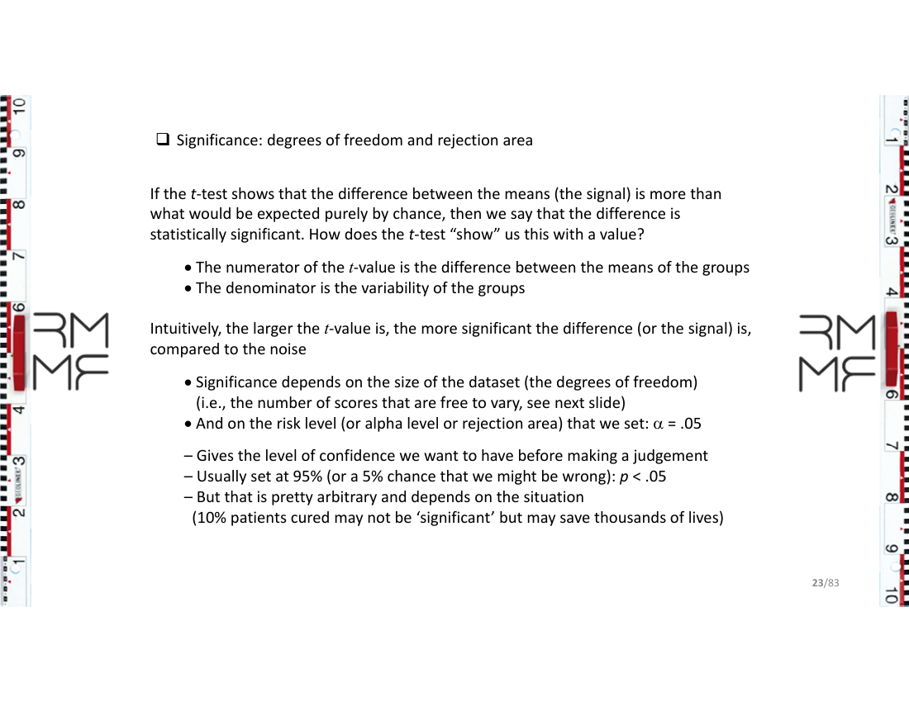
显著性（Significance）：自由度（degrees of freedom）与拒绝域（rejection area）
如果 t 检验（t-test）表明均值（means）之间的差异（即信号（signal））大于纯靠随机偶然（chance）所能预期的程度，那么我们就称该差异具有统计显著性（statistically significant）。那么，t 检验（t-test）是如何通过一个数值向我们「展示」这一点的呢？
- t 值（t-value）的分子是各组均值（means）之间的差异
- 分母是各组的变异性（variability）
直观地说，t 值（t-value）越大，相对于噪声（noise）而言，该差异（或信号（signal））就越显著（significant）
- 显著性（Significance）取决于数据集的大小（即自由度（degrees of freedom））（也就是可以自由变动的分数个数，见下一页）
- 也取决于我们设定的风险水平（risk level）（或 alpha 水平（alpha level）、拒绝域（rejection area））：α = .05
- 它给出了我们在做出判断之前所希望达到的置信水平（level of confidence）
- 通常设定为 95%（即我们有 5% 的可能性犯错）：p < .05
- 但这其实相当主观任意，具体取决于实际情况（10% 的患者被治愈可能并不「显著（significant）」，但却能挽救成千上万条生命）
英文检索原文（公式与版式请看左侧原图）
Significance: degrees of freedom and rejection area If the t-test shows that the difference between the means (the signal) is more than what would be expected purely by chance, then we say that the difference is statistically significant. How does the t-test “show” us this with a value? The numerator of the t-value is the difference between the means of the groups The denominator is the variability of the groups Intuitively, the larger the t-value is, the more significant the difference (or the signal) is, compared to the noise Significance depends on the size of the dataset (the degrees of freedom) (i.e., the number of scores that are free to vary, see next slide) And on the risk level (or alpha level or rejection area) that we set: = .05 – Gives the level of confidence we want to have before making a judgement – Usually set at 95% (or a 5% chance that we might be wrong): p < .05 – But that is pretty arbitrary and depends on the situation (10% patients cured may not be ‘significant’ but may save thousands of lives) 23/83

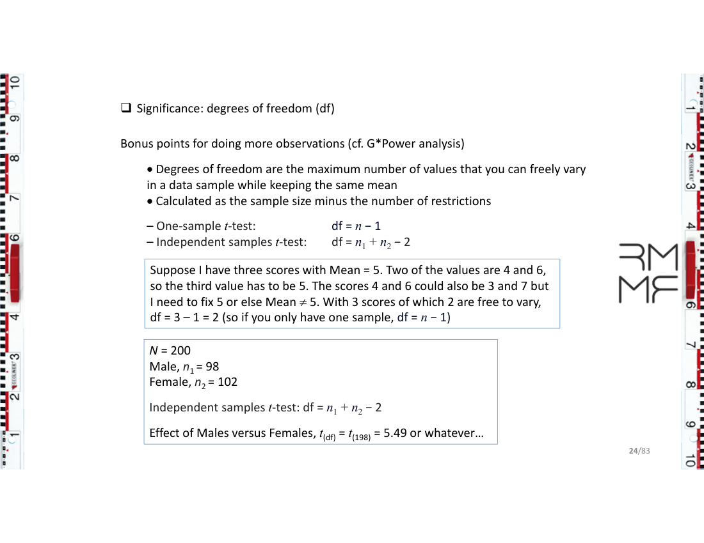
显著性（Significance）：自由度（degrees of freedom, df）
N = 200
男性（Male），n1 = 98
女性（Female），n2 = 102
独立样本 t 检验（Independent samples t-test）：df = n1 + n2 − 2
男性与女性对比的效应（Effect），t(df) = t(198) = 5.49 或其他数值……
进行更多次观测（observations）会有额外优势（参见 G*Power 分析（G*Power analysis））
- 自由度（Degrees of freedom）是指在保持均值（mean）不变的情况下，一个数据样本（data sample）中最多可以自由变动的数值个数
- 计算方式为样本量（sample size）减去约束条件（restrictions）的个数
- 单样本 t 检验（One-sample t-test）：df = n − 1
- 独立样本 t 检验（Independent samples t-test）：df = n1 + n2 − 2
假设我有三个分数，其均值（Mean） = 5。其中两个数值是 4 和 6，那么第三个数值就必须是 5。这两个分数 4 和 6 也可以是 3 和 7，但我必须固定 5，否则均值（Mean）就不再是 5。在 3 个分数中有 2 个可以自由变动，因此 df = 3 – 1 = 2（所以如果你只有一个样本（sample），df = n − 1）。
英文检索原文（公式与版式请看左侧原图）
Significance: degrees of freedom (df) N = 200 Male, n1 = 98 Female, n2 = 102 Independent samples t-test: df = n1 + n2 − 2 Effect of Males versus Females, t(df) = t(198) = 5.49 or whatever… Bonus points for doing more observations (cf. G*Power analysis) Degrees of freedom are the maximum number of values that you can freely vary in a data sample while keeping the same mean Calculated as the sample size minus the number of restrictions – One-sample t-test: df = n − 1 – Independent samples t-test: df = n1 + n2 − 2 Suppose I have three scores with Mean = 5. Two of the values are 4 and 6, so the third value has to be 5. The scores 4 and 6 could also be 3 and 7 but I need to fix 5 or else Mean 5. With 3 scores of which 2 are free to vary, df = 3 – 1 = 2 (so if you only have one sample, df = n − 1) 24/83

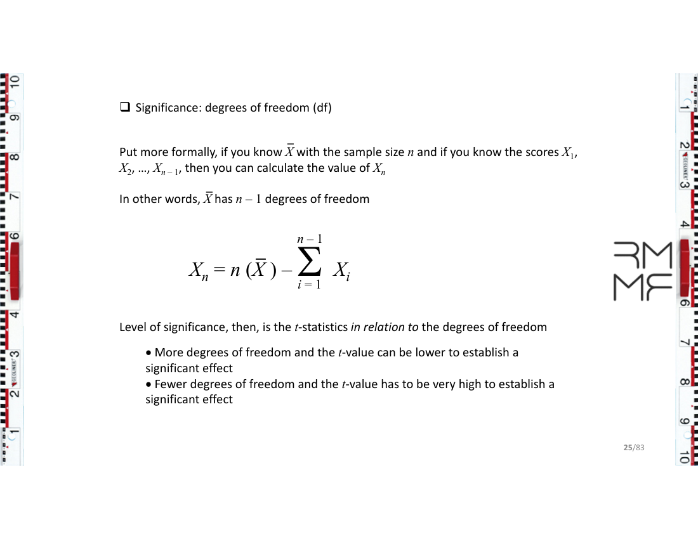
显著性（Significance）：自由度（degrees of freedom, df）
因此，显著性水平（Level of significance）就是t 统计量（t-statistics）与自由度（degrees of freedom）之间的关系
- 自由度（degrees of freedom）越多，要确立一个显著效应（significant effect）所需的 t 值（t-value）就可以越低
- 自由度（degrees of freedom）越少，要确立一个显著效应（significant effect）所需的 t 值（t-value）就必须非常高
更严谨地说，如果你知道样本量（sample size）为 n 的 X̄，并且知道分数 X1, X2, …, Xn−1，那么你就可以计算出 Xn 的值
换句话说，X̄ 拥有 n − 1 个自由度（degrees of freedom）
英文检索原文（公式与版式请看左侧原图）
Significance: degrees of freedom (df) Level of significance, then, is the t-statistics in relation to the degrees of freedom More degrees of freedom and the t-value can be lower to establish a significant effect Fewer degrees of freedom and the t-value has to be very high to establish a significant effect Put more formally, if you know X with the sample size n and if you know the scores X1, X2, …, Xn – 1, then you can calculate the value of Xn In other words, X has n – 1 degrees of freedom _ _ Xn = n (X ) –Xi _ n – 1 i = 1 25/83

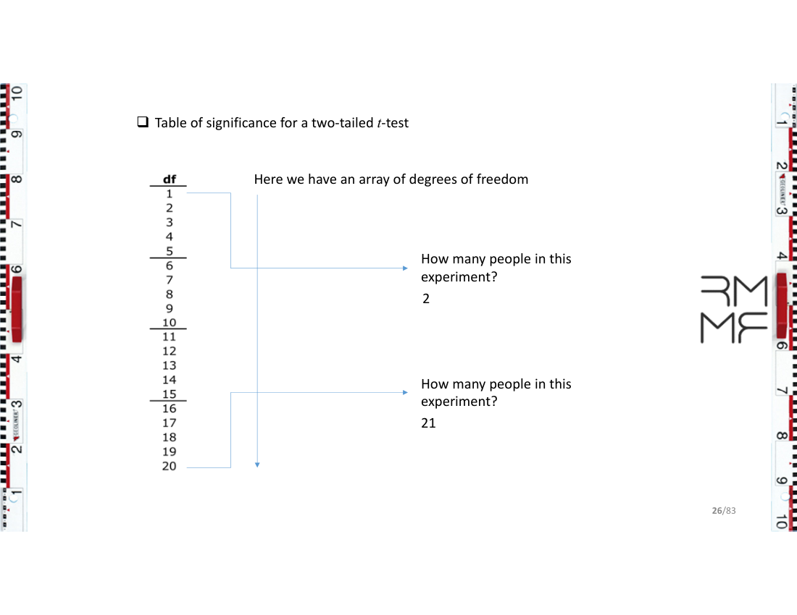
双尾 t 检验（two-tailed t-test）的显著性检验表（Table of significance）
这里有一列自由度（degrees of freedom）
这项实验（experiment）中有多少人？
2
这项实验（experiment）中有多少人？
21
英文检索原文（公式与版式请看左侧原图）
Table of significance for a two-tailed t-test Here we have an array of degrees of freedom How many people in this experiment? How many people in this experiment? 2 21 26/83

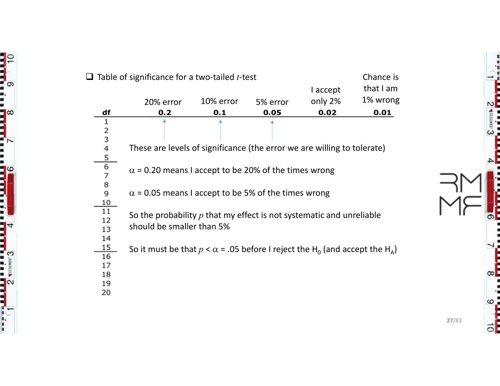
双尾 t 检验（two-tailed t-test）的显著性检验表（Table of significance）
这些是显著性水平（levels of significance）（即我们愿意容忍的误差（error））
α = 0.20 意味着我接受自己有 20% 的时候会出错
α = 0.05 意味着我接受自己有 5% 的时候会出错
因此，我的效应（effect）并非系统性（systematic）且不可靠的概率（probability） p 应当小于 5%
所以必须满足 p < α = .05，我才能拒绝零假设（H0）（并接受备择假设（HA））
- 20% 误差（error）
- 10% 误差（error）
- 5% 误差（error）
- 我只接受 2%
- 我有 1% 的概率出错
英文检索原文（公式与版式请看左侧原图）
Table of significance for a two-tailed t-test These are levels of significance (the error we are willing to tolerate) = 0.20 means I accept to be 20% of the times wrong = 0.05 means I accept to be 5% of the times wrong So the probability p that my effect is not systematic and unreliable should be smaller than 5% So it must be that p < = .05 before I reject the H0 (and accept the HA) 20% error 10% error 5% error I accept only 2% Chance is that I am 1% wrong 27/83

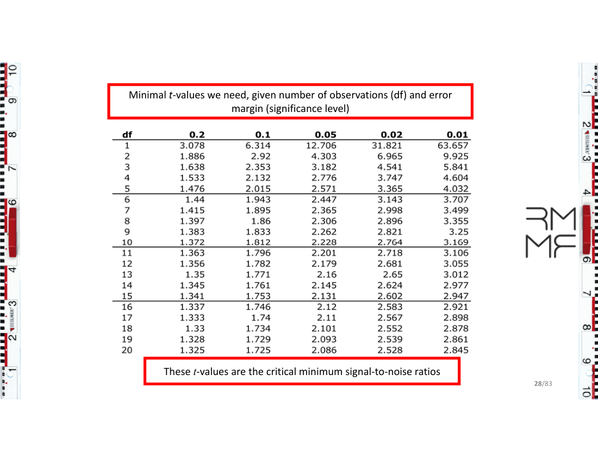
在给定观测次数（number of observations）（自由度（df））和误差范围（error margin）（显著性水平（significance level））的情况下，我们所需的最小 t 值（t-values）
这些 t 值（t-values）就是临界最小信噪比（critical minimum signal-to-noise ratios）
英文检索原文（公式与版式请看左侧原图）
Minimal t-values we need, given number of observations (df) and error margin (significance level) These t-values are the critical minimum signal-to-noise ratios 28/83

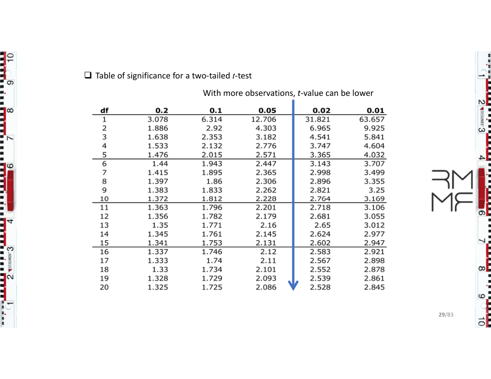
双尾 t 检验（two-tailed t-test）的显著性检验表（Table of significance）
随着观测次数（observations）增多，t 值（t-value）可以更低
英文检索原文（公式与版式请看左侧原图）
Table of significance for a two-tailed t-test With more observations, t-value can be lower 29/83

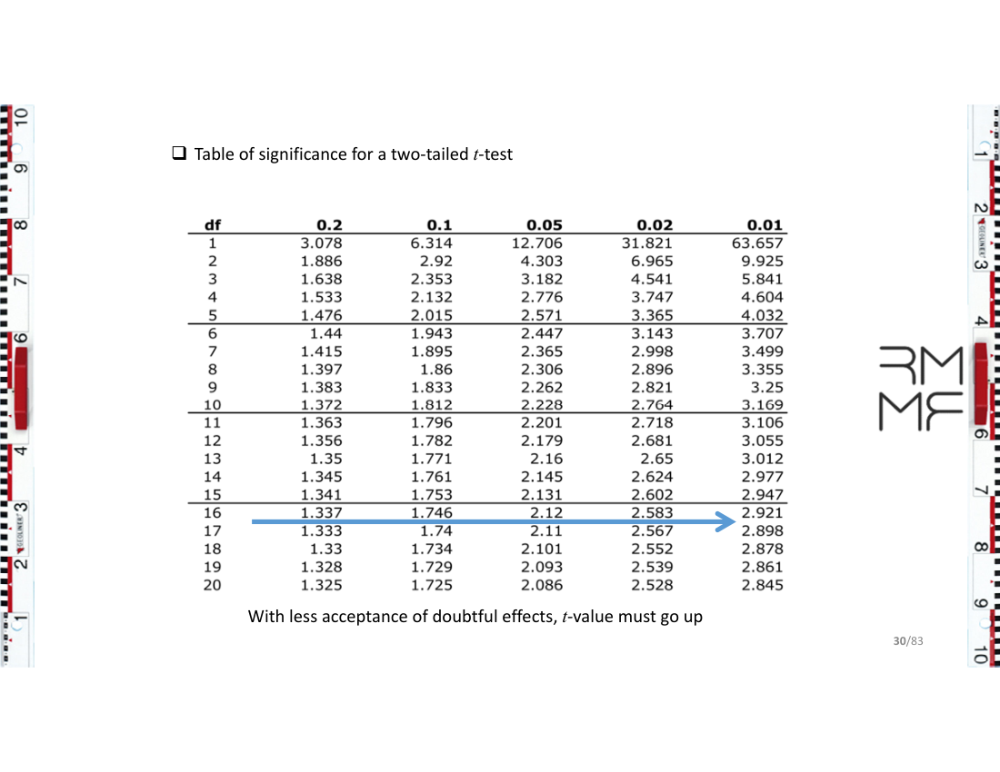
双尾 t 检验（two-tailed t-test）的显著性检验表（Table of significance）
对存疑效应（effects）的容忍度越低，t 值（t-value）就必须越高
英文检索原文（公式与版式请看左侧原图）
Table of significance for a two-tailed t-test With less acceptance of doubtful effects, t-value must go up 30/83

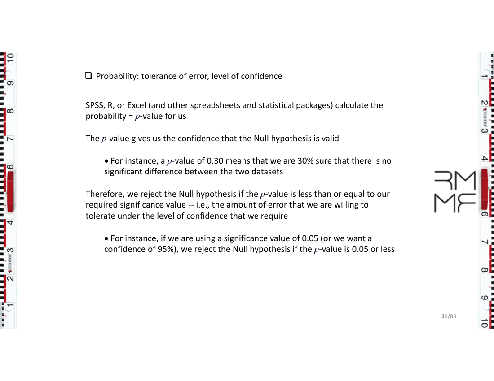
概率（Probability）：误差容忍度（tolerance of error），置信水平（level of confidence）
SPSS、R 或 Excel（以及其他电子表格和统计软件包（statistical packages））会为我们计算出概率（probability） = p 值（p-value）
p 值（p-value）给出了我们对零假设（Null hypothesis）成立的置信度（confidence）
- 例如，p 值（p-value）为 0.30 意味着我们有 30% 的把握认为这两个数据集（datasets）之间没有显著差异（significant difference）
因此，如果 p 值（p-value）小于或等于我们所要求的显著性水平值（significance value）——即在我们所要求的置信水平（level of confidence）下愿意容忍的误差（error）量——我们就拒绝零假设（Null hypothesis）
- 例如，如果我们使用 0.05 的显著性水平值（significance value）（或者我们希望达到 95% 的置信度（confidence）），当 p 值（p-value）为 0.05 或更小时，我们就拒绝零假设（Null hypothesis）
英文检索原文（公式与版式请看左侧原图）
SPSS, R, or Excel (and other spreadsheets and statistical packages) calculate the probability = p-value for us The p-value gives us the confidence that the Null hypothesis is valid For instance, a p-value of 0.30 means that we are 30% sure that there is no significant difference between the two datasets Therefore, we reject the Null hypothesis if the p-value is less than or equal to our required significance value -- i.e., the amount of error that we are willing to tolerate under the level of confidence that we require For instance, if we are using a significance value of 0.05 (or we want a confidence of 95%), we reject the Null hypothesis if the p-value is 0.05 or less Probability: tolerance of error, level of confidence 31/83

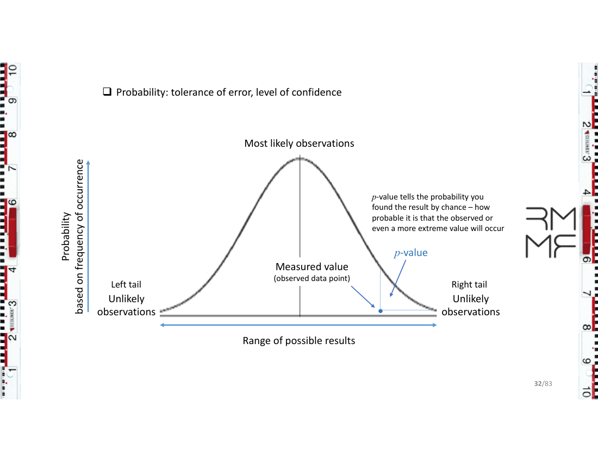
概率（Probability）：误差容忍度（tolerance of error），置信水平（level of confidence）
基于出现频率（frequency of occurrence）的概率（Probability）
可能结果的范围
最有可能的观测值（observations）
不太可能的观测值（observations）
不太可能的观测值（observations）
左尾（Left tail）
右尾（Right tail）
测量值（Measured value）（观测数据点（observed data point））
- p 值（p-value）：p 值（p-value）告诉你凭随机偶然（chance）得到该结果的概率（probability）——即出现当前观测值（observed）或更极端数值的可能性有多大
英文检索原文（公式与版式请看左侧原图）
Probability: tolerance of error, level of confidence Probability based on frequency of occurrence Range of possible results Most likely observations Unlikely observations Unlikely observations Left tail Right tail Measured value (observed data point) p-value p-value tells the probability you found the result by chance – how probable it is that the observed or even a more extreme value will occur 32/83

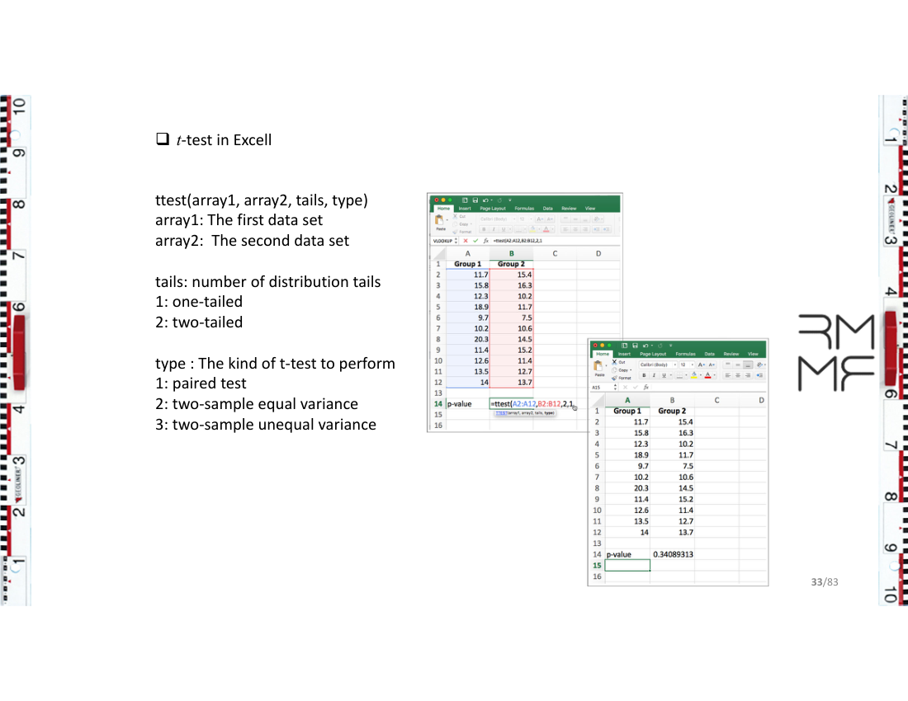
Excel 中的 t 检验（t-test）
ttest(array1, array2, tails, type)
array1：第一个数据集（data set）array2：第二个数据集（data set）tails：分布尾部（distribution tails）的数量1：单尾（one-tailed）2：双尾（two-tailed）
type：要执行的 t 检验（t-test）类型1：配对检验（paired test）2：双样本等方差（two-sample equal variance）3：双样本异方差（two-sample unequal variance）
英文检索原文（公式与版式请看左侧原图）
ttest(array1, array2, tails, type) array1: The first data set array2: The second data set tails: number of distribution tails 1: one-tailed 2: two-tailed type : The kind of t-test to perform 1: paired test 2: two-sample equal variance 3: two-sample unequal variance t-test in Excell 33/83

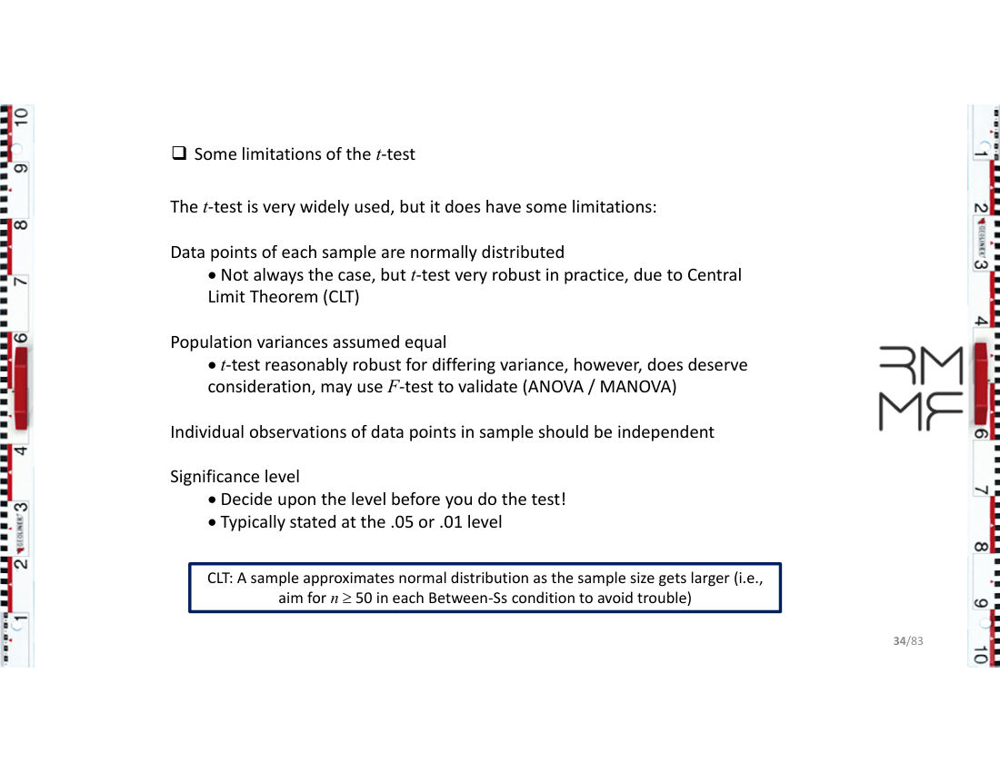
t 检验（t-test）的一些局限性
t 检验（t-test）的应用非常广泛，但它确实存在一些局限性：
- 每个样本（sample）的数据点（data points）呈正态分布（normally distributed）
- 实际情况并不总是如此，但由于中心极限定理（Central Limit Theorem, CLT），t 检验（t-test）在实践中非常稳健（robust）
- 假定总体方差（Population variances）相等
- t 检验（t-test）对不同的方差（variance）具有相当好的稳健性（robust），不过这一点仍值得考虑，可以使用 F 检验（F-test）来进行验证（方差分析（ANOVA） / 多元方差分析（MANOVA））
- 样本（sample）中数据点（data points）的各个独立观测值（Individual observations）应当是相互独立的（independent）
- 显著性水平（Significance level）
- 在进行检验之前就先确定好该水平！
- 通常设定在 .05 或 .01 水平
中心极限定理（CLT）：随着样本量（sample size）增大，样本（sample）会近似服从正态分布（normal distribution）（也就是说，在每个被试间条件（Between-Ss condition）中争取达到 n 50，以避免麻烦）
英文检索原文（公式与版式请看左侧原图）
The t-test is very widely used, but it does have some limitations: Data points of each sample are normally distributed Not always the case, but t-test very robust in practice, due to Central Limit Theorem (CLT) Population variances assumed equal t-test reasonably robust for differing variance, however, does deserve consideration, may use F-test to validate (ANOVA / MANOVA) Individual observations of data points in sample should be independent Significance level Decide upon the level before you do the test! Typically stated at the .05 or .01 level Some limitations of the t-test CLT: A sample approximates normal distribution as the sample size gets larger (i.e., aim for n 50 in each Between-Ss condition to avoid trouble) 34/83

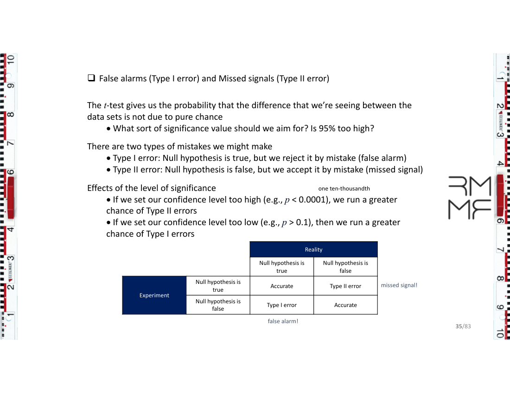
虚警（False alarms）（I 类错误（Type I error））与漏报信号（Missed signals）（II 类错误（Type II error））
t 检验（t-test）能告诉我们，在各个数据集（data sets）之间观察到的差异并非源于纯粹偶然（pure chance）的概率（probability）。
- 我们应当追求怎样的显著性水平（significance value）？95% 是否过高？
我们可能会犯两种类型的错误：
- I 类错误（Type I error）：零假设（Null hypothesis）为真，但我们错误地拒绝了它（虚警（false alarm））
- II 类错误（Type II error）：零假设（Null hypothesis）为假，但我们错误地接受了它（漏报信号（missed signal））
显著性水平（level of significance）的影响：
- 如果我们将置信水平（confidence level）设得过高（例如
p < 0.0001，即万分之一），我们就会面临更高的II 类错误（Type II errors）风险 - 如果我们将置信水平（confidence level）设得过低（例如
p > 0.1），那么我们就会面临更高的I 类错误（Type I errors）风险
| 现实情况：零假设（Null hypothesis）为真 | 现实情况：零假设（Null hypothesis）为假 | |
|---|---|---|
| 实验结果：零假设（Null hypothesis）为真 | 准确（Accurate） | II 类错误（Type II error）（漏报信号！missed signal!） |
| 实验结果：零假设（Null hypothesis）为假 | I 类错误（Type I error）（虚警！false alarm!） | 准确（Accurate） |
英文检索原文（公式与版式请看左侧原图）
The t-test gives us the probability that the difference that we’re seeing between the data sets is not due to pure chance What sort of significance value should we aim for? Is 95% too high? There are two types of mistakes we might make Type I error: Null hypothesis is true, but we reject it by mistake (false alarm) Type II error: Null hypothesis is false, but we accept it by mistake (missed signal) Effects of the level of significance If we set our confidence level too high (e.g., p < 0.0001), we run a greater chance of Type II errors If we set our confidence level too low (e.g., p > 0.1), then we run a greater chance of Type I errors Reality Null hypothesis is true Null hypothesis is false Experiment Null hypothesis is true Accurate Type II error Null hypothesis is false Type I error Accurate False alarms (Type I error) and Missed signals (Type II error) one ten-thousandth false alarm! missed signal! 35/83

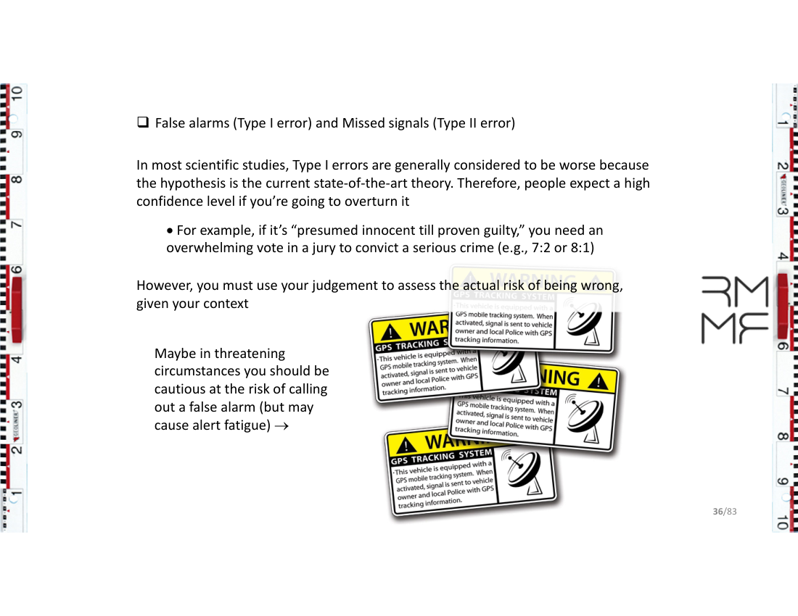
虚警（False alarms）（I 类错误（Type I error））与漏报信号（Missed signals）（II 类错误（Type II error））
在大多数科学研究中，I 类错误（Type I errors）通常被认为更严重，因为现有假设（hypothesis）代表了当前最前沿的理论。因此，如果你想推翻它，人们会期待极高的置信水平（confidence level）。
- 例如，按照「无罪推定（presumed innocent till proven guilty）」的原则，你需要陪审团中压倒性的投票（例如 7:2 或 8:1）才能对重罪定罪。
然而，你必须结合具体情境运用自己的判断，来评估犯错的实际风险。
也许在具有威胁性的紧急情况下，你宁可冒着发出虚警（false alarm）的风险也要保持谨慎（但这也可能会导致警报疲劳（alert fatigue））→
英文检索原文（公式与版式请看左侧原图）
In most scientific studies, Type I errors are generally considered to be worse because the hypothesis is the current state-of-the-art theory. Therefore, people expect a high confidence level if you’re going to overturn it For example, if it’s “presumed innocent till proven guilty,” you need an overwhelming vote in a jury to convict a serious crime (e.g., 7:2 or 8:1) False alarms (Type I error) and Missed signals (Type II error) However, you must use your judgement to assess the actual risk of being wrong, given your context Maybe in threatening circumstances you should be cautious at the risk of calling out a false alarm (but may cause alert fatigue) 36/83

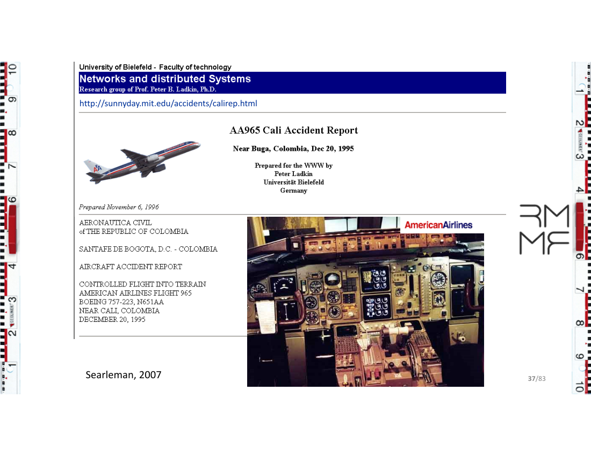
http://sunnyday.mit.edu/accidents/calirep.html
Searleman, 2007
英文检索原文（公式与版式请看左侧原图）
http://sunnyday.mit.edu/accidents/calirep.html Searleman, 2007 37/83

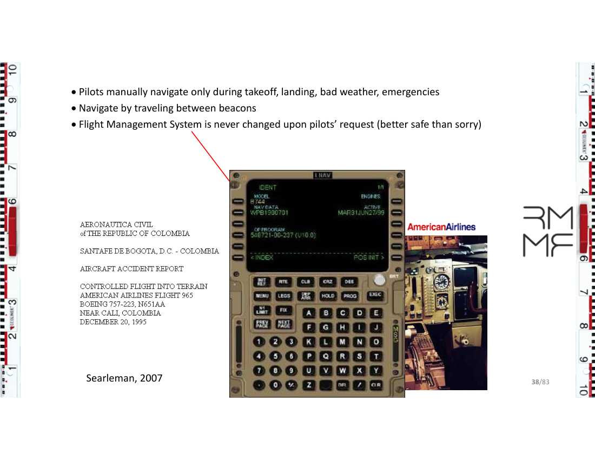
- 飞行员仅在起飞、降落、恶劣天气及紧急情况下进行手动导航
- 通过在信标之间飞行来进行导航
- 飞行管理系统（Flight Management System）从不因飞行员的请求而轻易改动（安全起见，宁稳勿躁 / better safe than sorry）
Searleman, 2007
英文检索原文（公式与版式请看左侧原图）
Pilots manually navigate only during takeoff, landing, bad weather, emergencies Navigate by traveling between beacons Flight Management System is never changed upon pilots’ request (better safe than sorry) Searleman, 2007 38/83

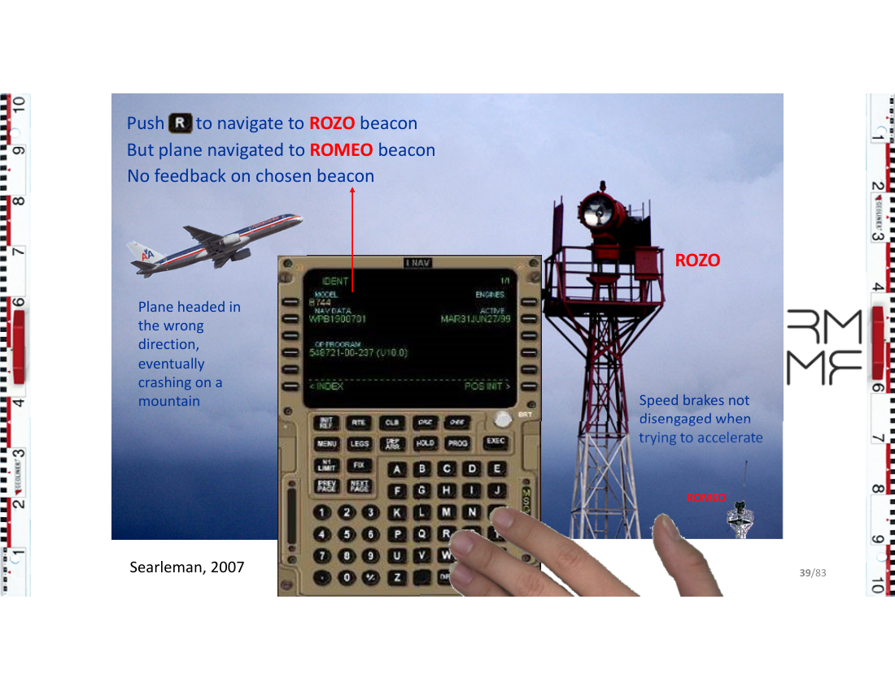
- 按下按键以导航至 ROZO 信标
- 对所选信标没有任何反馈（feedback）
- 但飞机却导航飞向了 ROMEO 信标
- ROZO
- ROMEO
- 飞机朝错误的方向飞去，最终撞山坠毁
- 在试图加速时，减速板（Speed brakes）并未解除
Searleman, 2007
英文检索原文（公式与版式请看左侧原图）
ROZO But plane navigated to ROMEO beacon ROMEO Push to navigate to ROZO beacon No feedback on chosen beacon Plane headed in the wrong direction, eventually crashing on a mountain Speed brakes not disengaged when trying to accelerate Searleman, 2007 39/83

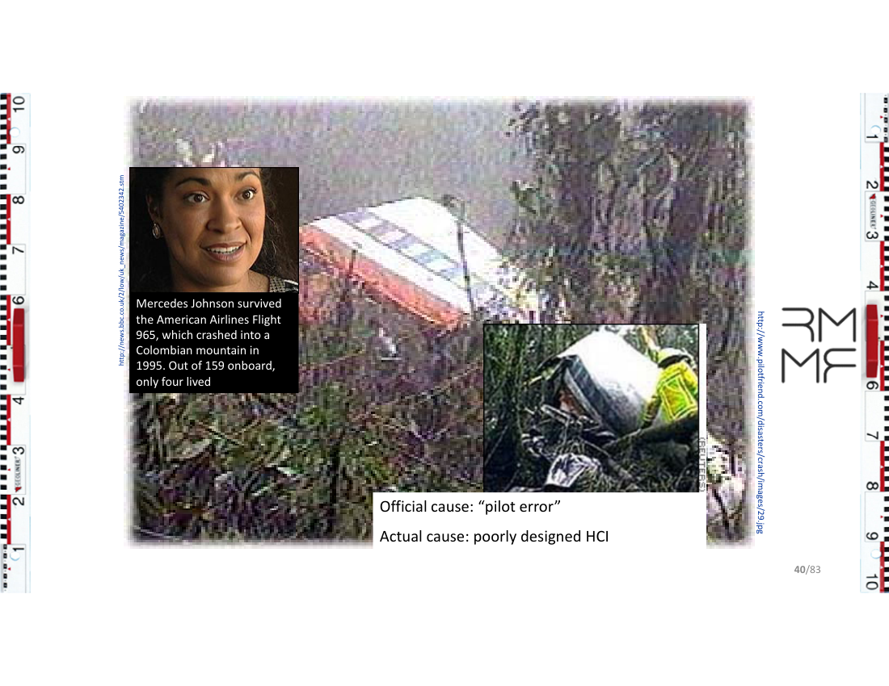
1995 年美国航空 965 号航班（American Airlines Flight 965）在哥伦比亚坠毁于山中，机上 159 人中仅 4 人生还，Mercedes Johnson 是幸存者之一。
官方原因：「飞行员失误（pilot error）」
实际原因：设计糟糕的人机交互（HCI）
http://www.pilotfriend.com/disasters/crash/images/29.jpg
http://news.bbc.co.uk/2/low/uk_news/magazine/5402342.stm
英文检索原文（公式与版式请看左侧原图）
Mercedes Johnson survived the American Airlines Flight 965, which crashed into a Colombian mountain in 1995. Out of 159 onboard, only four lived Official cause: “pilot error” Actual cause: poorly designed HCI http://www.pilotfriend.com/disasters/crash/images/29.jpg http://news.bbc.co.uk/2/low/uk_news/magazine/5402342.stm 40/83

考试样题：「应用题（Application）」—— 开放式问题（Open-ended question）
结合虚警（False alarms）（I 类错误（Type I error））与漏报信号（Missed signals）（II 类错误（Type II error））（第 10 讲：t 检验（t-tests）与方差分析与多元方差分析（(M)ANOVA）），假设我们正在使用稀疏触觉代理（Sparse Haptic Proxy）重新设计 AA965 航班的飞行管理系统（FMS）。
如果我们以准确率（accuracy）来衡量用户绩效（user performance），犯下I 类错误（Type I error）或II 类错误（II error）的后果分别是什么？
- 零假设（H0）：使用新的触摸面板不会带来更多的正确用户反应
- 备择假设（H1）：新的触摸面板会带来更多的正确反应
菲茨定律（Fitts’ Law）！！
英文检索原文（公式与版式请看左侧原图）
With respect to False alarms (Type I error) and Missed signals (Type II error) (Lecture 10: t-tests and (M)ANOVA), suppose we are redesigning the Flight Management System (FMS) of AA965, using Sparse Haptic Proxy What is the consequence of making a Type I or II error, if we consider user performance in terms of accuracy? H0: Using the new touch panel does not result in more correct user responses H1: The new touch panel leads to more correct responses Exam Sample Item, “Application,” Open-ended question Fitts´ Law!! 41/83

考试样题：「应用题（Application）」—— 开放式问题（Open-ended question）
I 类错误（Type I error）意味着新的飞行管理系统（FMS）并未给我们带来更好的表现，但我们仍然更换了它。后果：我们花费了额外的资源开发软件，而飞行员必须学习一套新的图形用户界面（GUI），却没有任何收益。
II 类错误（Type II error）意味着新的飞行管理系统（FMS）本能带来更准确的表现，但为了「稳妥起见」（应飞行员的要求），我们仍坚持使用旧菜单。后果：飞行员在输入 ROZO 或 ROMEO 时更容易出错，导致飞机撞山坠毁——但「幸运的是」，他们对这个界面已经很熟悉了。
测试或许能挽救生命（Testing may save lives）
英文检索原文（公式与版式请看左侧原图）
A Type I error would mean that the new FMS does not give us better performance, but we change it anyway. Consequence: We spend extra resources developing the software, and our pilots must learn a new GUI for no benefit A Type II error would mean that the new FMS will give us a more accurate performance, but we stick with the old menu to “play safe” (upon pilot request). Consequence: The pilots make more errors typing in ROZO or ROMEO, crashing their planes into a mountain but fortunately the interface is already familiar to them Testing may save lives Exam Sample Item, “Application,” Open-ended question 42/83

以缺席作为存在的证据（Evidence of existence through absence）
- 苏格拉底式讨论（Socratic discussion）
苏格拉底（Socrates）：
当数据无法驳斥零假设（refuting the Null）时，这是否意味着一种药物就是安全的？
「以缺席作为存在的证据（evidence of existence through absence）」这一概念指出，某样事物的缺席本身，就可以成为另一事物存在或已经发生过的证据（拉丁语：沉默论证（argumentum ex silentio），即「沉默论证 / argument from silence」）。
缺乏某样东西，可能表明另一事物的存在或真实性。
你找不到证据，但这是否意味着它不存在？也许只是你的传感器不够灵敏（频率主义（frequentism）并不承认这些细微差别）。
两件事物具有相似的效应或没有效应，并不意味着它们是同一件事物（零假设（H0）未被驳斥）。
相同 = 无差异。无差异 ≠ 相同（Same = no difference. No difference ≠ same）。
英文检索原文（公式与版式请看左侧原图）
Evidence of existence through absence Socratic discussion Socrates When data are incapable of refuting the Null, does that mean a drug is safe? The concept of “evidence of existence through absence” suggests that the absence of something can itself be evidence that something exists or has occurred (Latin: argumentum ex silentio or argument from silence) The lack of something indicates the presence or truth of something else You cannot find proof but does that mean it is not there? Maybe your sensors are not sensitive enough (subtleties are not acknowledged by frequentism) That two things have similar or no effects does not mean they are the same thing (H0 not refuted) Same = no difference. No difference same 43/83

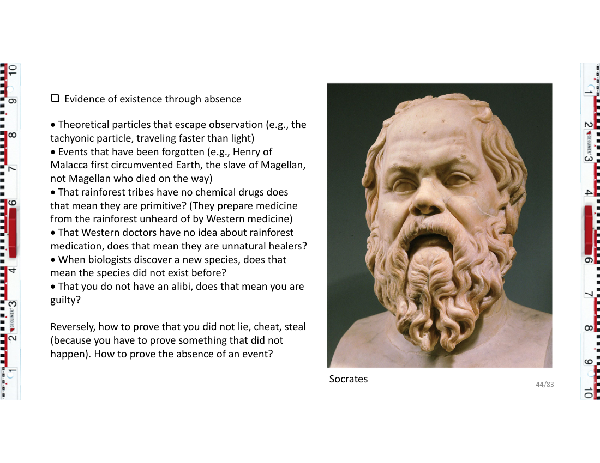
以缺席作为存在的证据（Evidence of existence through absence）
苏格拉底（Socrates）：
- 逃脱观察（observation）的理论粒子（例如：超光速运行的快子粒子 / tachyonic particle）
- 已被遗忘的历史事件（例如：率先完成环球航行的是麦哲伦的奴隶马六甲的亨利（Henry of Malacca），而不是中途丧命的麦哲伦）
- 雨林部落没有化学药物，这是否意味着他们原始？（他们用雨林植物配制的药物，西方医学从未听说过）
- 西方医生对雨林草药一无所知，这是否意味着他们是不自然的治疗者？
- 当生物学家发现一个新物种时，这是否意味着该物种在此之前并不存在？
- 你没有不在场证明（alibi），这是否意味着你有罪？
反过来，你如何证明自己没有撒谎、没有作弊、没有偷窃（因为你必须去证明一件没有发生过的事）？如何证明一个事件的缺席？
英文检索原文（公式与版式请看左侧原图）
Theoretical particles that escape observation (e.g., the tachyonic particle, traveling faster than light) Events that have been forgotten (e.g., Henry of Malacca first circumvented Earth, the slave of Magellan, not Magellan who died on the way) That rainforest tribes have no chemical drugs does that mean they are primitive? (They prepare medicine from the rainforest unheard of by Western medicine) That Western doctors have no idea about rainforest medication, does that mean they are unnatural healers? When biologists discover a new species, does that mean the species did not exist before? That you do not have an alibi, does that mean you are guilty? Reversely, how to prove that you did not lie, cheat, steal (because you have to prove something that did not happen). How to prove the absence of an event? Evidence of existence through absence Socrates 44/83

以缺席作为存在的证据（Evidence of existence through absence）
- 苏格拉底式讨论（Socratic discussion）
苏格拉底（Socrates）：
然而，它可能具有有条件的实用价值（conditional utility）：
在受控科学实验（controlled scientific experiment）中，预期结果的缺席可以挑战一个假设（hypothesis）（备择假设（HA）不被接受）。
证据的缺席（Absence of evidence）可以有条件地暗示某事物的存在或发生，但这需要：
- 审慎克制的解释（reluctant interpretation）
- 对前提假设（assumptions）和偏差（biases）的警觉
- 对情境背景与局限性的理解
不完整的信息无法进行直截了当的推理（reasoning），因为它引入了概率（probability）。
英文检索原文（公式与版式请看左侧原图）
However, there may be conditional utility: In a controlled scientific experiment, the absence of an expected outcome can challenge a hypothesis (HA not accepted) Absence of evidence may conditionally suggest the existence or occurrence but requires: – reluctant interpretation – awareness of assumptions and biases – understanding of context and limitations Incomplete information defies straightforward reasoning as it introduces probability Evidence of existence through absence Socratic discussion Socrates 45/83

课间休息（Break）
英文检索原文（公式与版式请看左侧原图）
Break

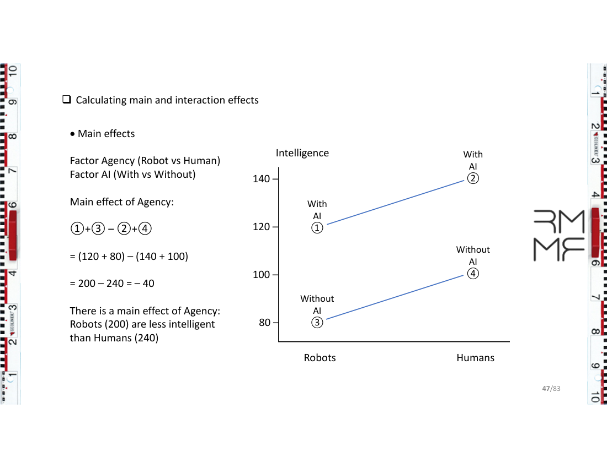
计算主效应（main effects）与交互效应（interaction effects）
- 主效应（Main effects）
因子（Factor）：能动性（Agency）（机器人 vs 人类）
因子（Factor）：AI（有 AI vs 无 AI）
能动性（Agency）的主效应（Main effect）：
① + ③ – （② + ④）
= (120 + 80) – (140 + 100)
= 200 – 240 = –40
存在能动性（Agency）的主效应（main effect）：机器人（200）的智力（Intelligence）低于人类（240）。
图表数据（纵轴：智力 Intelligence，刻度 80 – 100 – 120 – 140）：
- 机器人（Robots）：
- 有 AI（With AI）①：120
- 无 AI（Without AI）③：80
- 人类（Humans）：
- 有 AI（With AI）②：140
- 无 AI（Without AI）④：100
英文检索原文（公式与版式请看左侧原图）
Calculating main and interaction effects Main effects Factor Agency (Robot vs Human) Factor AI (With vs Without) Main effect of Agency: ①+③– ②+④ = (120 + 80) – (140 + 100) = 200 – 240 = – 40 There is a main effect of Agency: Robots (200) are less intelligent than Humans (240) Intelligence Robots Humans With AI ① Without AI ③ With AI ② Without AI ④ 80 – 100 – 120 – 140 – 47/83

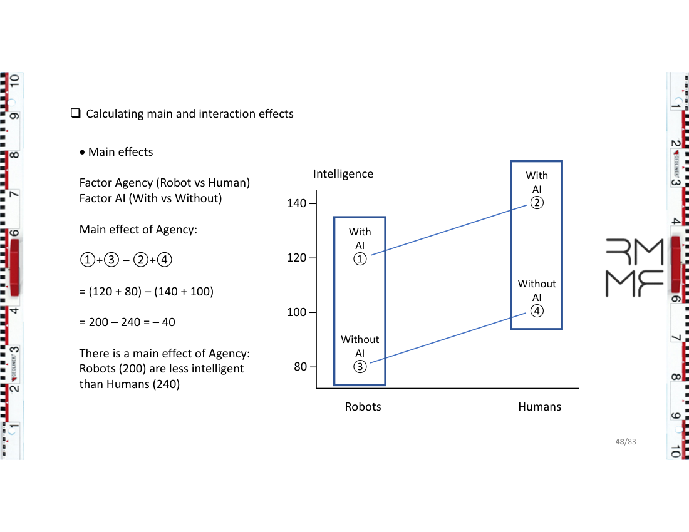
计算主效应（main effects）与交互效应（interaction effects）
- 主效应（Main effects）
因子（Factor）：能动性（Agency）（机器人 vs 人类）
因子（Factor）：AI（有 AI vs 无 AI）
能动性（Agency）的主效应（Main effect）：
① + ③ – （② + ④）
= (120 + 80) – (140 + 100)
= 200 – 240 = –40
存在能动性（Agency）的主效应（main effect）：机器人（200）的智力（Intelligence）低于人类（240）。
图表数据（纵轴：智力 Intelligence，刻度 80 – 100 – 120 – 140）：
- 机器人（Robots）：
- 有 AI（With AI）①：120
- 无 AI（Without AI）③：80
- 人类（Humans）：
- 有 AI（With AI）②：140
- 无 AI（Without AI）④：100
英文检索原文（公式与版式请看左侧原图）
Calculating main and interaction effects Main effects Factor Agency (Robot vs Human) Factor AI (With vs Without) Main effect of Agency: ①+③– ②+④ = (120 + 80) – (140 + 100) = 200 – 240 = – 40 There is a main effect of Agency: Robots (200) are less intelligent than Humans (240) Intelligence Robots Humans With AI ① Without AI ③ With AI ② Without AI ④ 80 – 100 – 120 – 140 – 48/83

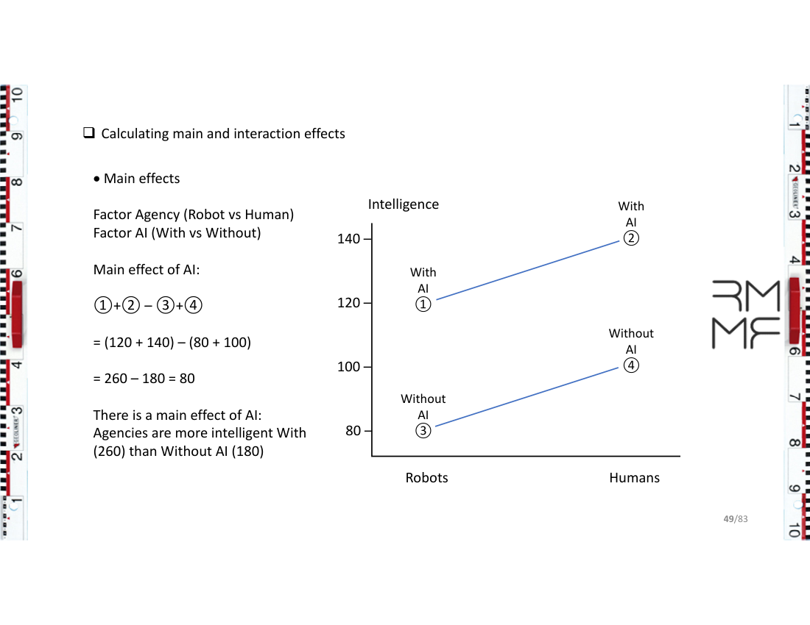
计算主效应（main effects）与交互效应（interaction effects）
- 主效应（Main effects）
- 因子（Factor） 行动主体（Agency：Robot vs Human）
- 因子（Factor） AI（有 AI [With] vs 无 AI [Without]）
AI 的主效应（Main effect）：
① + ② – ③ + ④
= (120 + 140) – (80 + 100)
= 260 – 180 = 80
存在 AI 的主效应（main effect）：
有 AI 时（260），行动主体（Agencies）比无 AI 时（180）更智能
图表说明：
- 纵轴（智力 Intelligence）：80 –、100 –、120 –、140 –
- 横轴：Robots（机器人）、Humans（人类）
- 数据点：With AI ①（有 AI ①）、Without AI ③（无 AI ③）、With AI ②（有 AI ②）、Without AI ④（无 AI ④）
英文检索原文（公式与版式请看左侧原图）
Calculating main and interaction effects Main effects Factor Agency (Robot vs Human) Factor AI (With vs Without) Main effect of AI: ①+②– ③+④ = (120 + 140) – (80 + 100) = 260 – 180 = 80 There is a main effect of AI: Agencies are more intelligent With (260) than Without AI (180) Intelligence Robots Humans With AI ① Without AI ③ With AI ② Without AI ④ 80 – 100 – 120 – 140 – 49/83

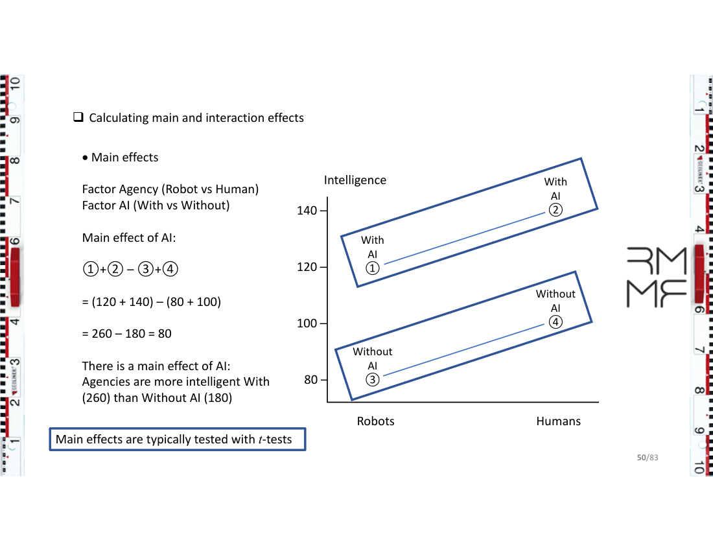
计算主效应（main effects）与交互效应（interaction effects）
- 主效应（Main effects）
- 因子（Factor） 行动主体（Agency：Robot vs Human）
- 因子（Factor） AI（有 AI [With] vs 无 AI [Without]）
AI 的主效应（Main effect）：
① + ② – ③ + ④
= (120 + 140) – (80 + 100)
= 260 – 180 = 80
存在 AI 的主效应（main effect）：
有 AI 时（260），行动主体（Agencies）比无 AI 时（180）更智能
图表说明：
- 纵轴（智力 Intelligence）：80 –、100 –、120 –、140 –
- 横轴：Robots（机器人）、Humans（人类）
- 数据点：With AI ①（有 AI ①）、Without AI ③（无 AI ③）、With AI ②（有 AI ②）、Without AI ④（无 AI ④）
主效应（Main effects）通常使用 t检验（t-tests） 进行检验
英文检索原文（公式与版式请看左侧原图）
Calculating main and interaction effects Main effects Factor Agency (Robot vs Human) Factor AI (With vs Without) Main effect of AI: ①+②– ③+④ = (120 + 140) – (80 + 100) = 260 – 180 = 80 There is a main effect of AI: Agencies are more intelligent With (260) than Without AI (180) Intelligence Robots Humans With AI ① Without AI ③ With AI ② Without AI ④ 80 – 100 – 120 – 140 – Main effects are typically tested with t-tests 50/83

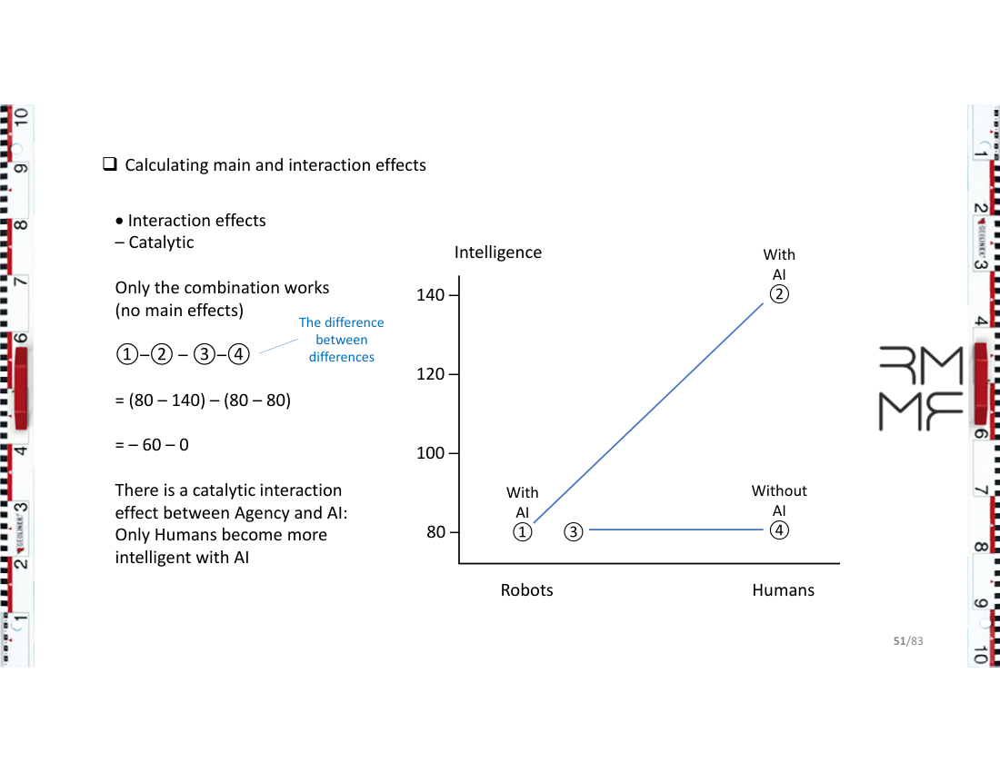
计算主效应（main effects）与交互效应（interaction effects）
- 交互效应（Interaction effects）
- 催化型（Catalytic）
- 只有组合才起作用（无主效应（main effects））
① – ② – ③ – ④
= (80 – 140) – (80 – 80)
= – 60 – 0
行动主体（Agency）与 AI 之间存在催化交互效应（catalytic interaction effect）：
只有人类在有 AI 时变得更智能
图表说明：
- 纵轴（智力 Intelligence）：80 –、100 –、120 –、140 –
- 横轴：Robots（机器人）、Humans（人类）
- 数据点：With AI ①（有 AI ①）、With AI ②（有 AI ②）、Without AI ③（无 AI ③）、Without AI ④（无 AI ④）
- 旁注：差异之间的差异（The difference between differences）
英文检索原文（公式与版式请看左侧原图）
Calculating main and interaction effects Interaction effects – Catalytic Only the combination works (no main effects) ①–②– ③–④ = (80 – 140) – (80 – 80) = – 60 – 0 There is a catalytic interaction effect between Agency and AI: Only Humans become more intelligent with AI Intelligence Robots Humans With AI ① With AI ② Without AI ④ 80 – 100 – 120 – 140 – Without AI ③ The difference between differences 51/83

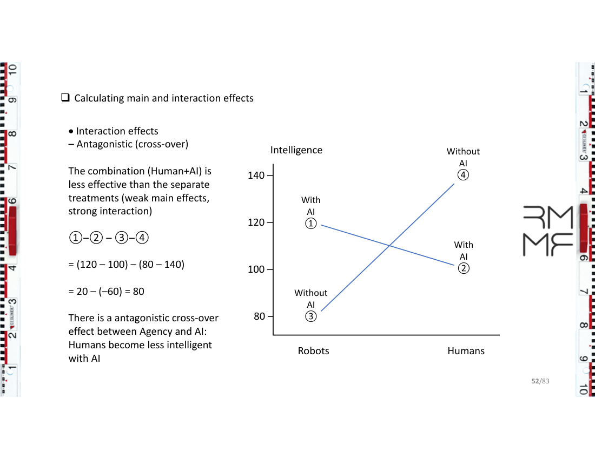
计算主效应（main effects）与交互效应（interaction effects）
- 交互效应（Interaction effects）
- 拮抗型（交叉型）（Antagonistic (cross-over)）
- 组合（Human+AI）的效果不如单独的处理（treatments）（弱主效应（main effects），强交互效应（interaction））
① – ② – ③ – ④
= (120 – 100) – (80 – 140)
= 20 – (–60) = 80
行动主体（Agency）与 AI 之间存在拮抗交叉效应（antagonistic cross-over effect）：
人类在有 AI 时变得更不智能
图表说明：
- 纵轴（智力 Intelligence）：80 –、100 –、120 –、140 –
- 横轴：Robots（机器人）、Humans（人类）
- 数据点：With AI ①（有 AI ①）、Without AI ③（无 AI ③）、Without AI ④（无 AI ④）、With AI ②（有 AI ②）
英文检索原文（公式与版式请看左侧原图）
Calculating main and interaction effects Interaction effects – Antagonistic (cross-over) The combination (Human+AI) is less effective than the separate treatments (weak main effects, strong interaction) ①–②– ③–④ = (120 – 100) – (80 – 140) = 20 – (–60) = 80 There is a antagonistic cross-over effect between Agency and AI: Humans become less intelligent with AI Intelligence Robots Humans 80 – 100 – 120 – 140 – With AI ① Without AI ③ Without AI ④ With AI ② 52/83

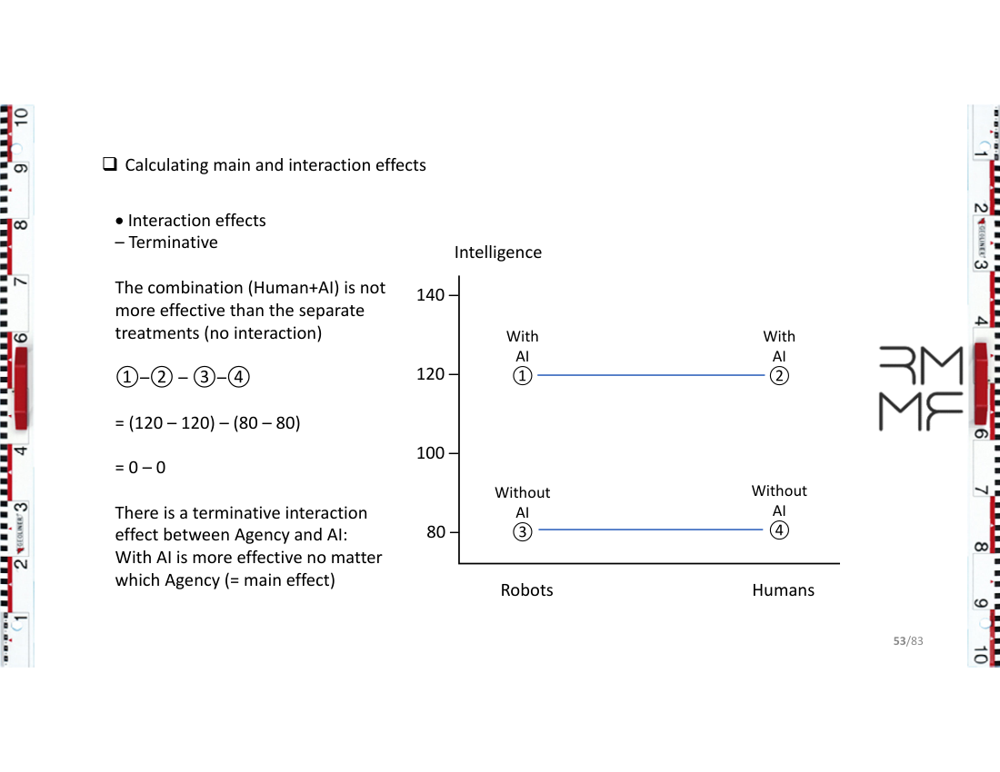
计算主效应（main effects）与交互效应（interaction effects）
- 交互效应（Interaction effects）
- 终止型（Terminative）
- 组合（Human+AI）的效果并不比单独的处理（treatments）更有效（无交互效应（interaction））
① – ② – ③ – ④
= (120 – 120) – (80 – 80)
= 0 – 0
行动主体（Agency）与 AI 之间存在终止型交互效应（terminative interaction effect）：
无论哪种行动主体（Agency），有 AI 都更有效（= 主效应（main effect））
图表说明：
- 纵轴（智力 Intelligence）：80 –、100 –、120 –、140 –
- 横轴：Robots（机器人）、Humans（人类）
- 数据点：With AI ①（有 AI ①）、Without AI ③（无 AI ③）、With AI ②（有 AI ②）、Without AI ④（无 AI ④）
英文检索原文（公式与版式请看左侧原图）
Calculating main and interaction effects Interaction effects – Terminative The combination (Human+AI) is not more effective than the separate treatments (no interaction) ①–②– ③–④ = (120 – 120) – (80 – 80) = 0 – 0 There is a terminative interaction effect between Agency and AI: With AI is more effective no matter which Agency (= main effect) Intelligence Robots Humans 80 – 100 – 120 – 140 – With AI ① Without AI ③ With AI ② Without AI ④ 53/83

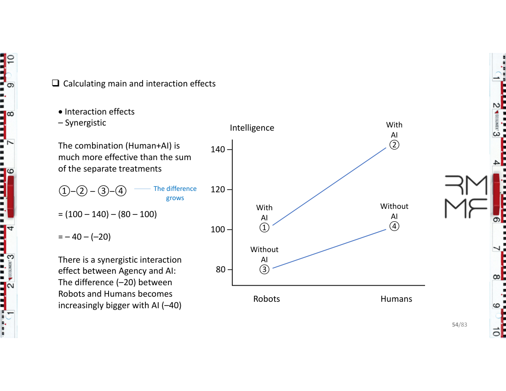
计算主效应（main effects）与交互效应（interaction effects）
- 交互效应（Interaction effects）
- 协同型（Synergistic）
- 组合（Human+AI）的效果远大于各单独处理（treatments）之和
① – ② – ③ – ④
= (100 – 140) – (80 – 100)
= – 40 – (–20)
行动主体（Agency）与 AI 之间存在协同交互效应（synergistic interaction effect）：
机器人与人类之间的差异（–20）在有 AI 时变得越来越大（–40）
图表说明：
- 纵轴（智力 Intelligence）：80 –、100 –、120 –、140 –
- 横轴：Robots（机器人）、Humans（人类）
- 数据点：With AI ①（有 AI ①）、Without AI ③（无 AI ③）、With AI ②（有 AI ②）、Without AI ④（无 AI ④）
- 旁注：差异增大（The difference grows）
英文检索原文（公式与版式请看左侧原图）
Calculating main and interaction effects Interaction effects – Synergistic The combination (Human+AI) is much more effective than the sum of the separate treatments ①–②– ③–④ = (100 – 140) – (80 – 100) = – 40 – (–20) There is a synergistic interaction effect between Agency and AI: The difference (–20) between Robots and Humans becomes increasingly bigger with AI (–40) Intelligence Robots Humans 80 – 100 – 120 – 140 – With AI ① Without AI ③ With AI ② Without AI ④ The difference grows 54/83

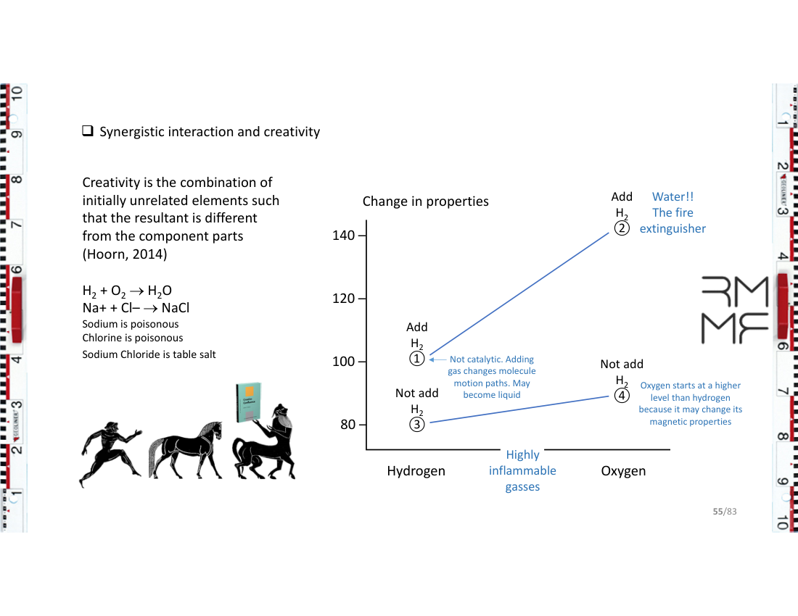
协同交互效应（Synergistic interaction）与创造力
创造力是将最初互不相关的元素组合在一起，使产生的结果不同于其各组成部分（Hoorn, 2014）
- H₂ + O₂ → H₂O
- Na⁺ + Cl⁻ → NaCl
- 钠（Sodium）有毒
- 氯（Chlorine）有毒
- 氯化钠（Sodium Chloride）是食盐
- 性质发生变化（Change in properties）
图表与标注说明：
- 纵轴刻度：80 –、100 –、120 –、140 –
- 横轴：氢（Hydrogen）、氧（Oxygen）
- 数据点：添加 H₂（Add H₂）①、添加 H₂（Add H₂）②、不添加 H₂（Not add H₂）③、不添加 H₂（Not add H₂）④
- 高度易燃气体（Highly inflammable gasses）
- 水！！灭火剂（Water!! The fire extinguisher）
- 非催化（catalytic）效应。加入气体会改变分子运动路径，可能会变成液体（Not catalytic. Adding gas changes molecule motion paths. May become liquid）
- 氧气的起始水平高于氢气，因为它可能会改变其磁学性质（Oxygen starts at a higher level than hydrogen because it may change its magnetic properties）
英文检索原文（公式与版式请看左侧原图）
Synergistic interaction and creativity Creativity is the combination of initially unrelated elements such that the resultant is different from the component parts (Hoorn, 2014) H2 + O2 H2O Na+ + Cl– NaCl Sodium is poisonous Chlorine is poisonous Sodium Chloride is table salt Change in properties 80 – 100 – 120 – 140 – Add H2 ① Not add H2 ③ Add H2 ② Not add H2 ④ Hydrogen Oxygen Not catalytic. Adding gas changes molecule motion paths. May become liquid Highly inflammable gasses Water!! The fire extinguisher Oxygen starts at a higher level than hydrogen because it may change its magnetic properties 55/83

计算主效应（main effects）与交互效应（interaction effects）
- 主效应（Main effects）
- 交互效应（Interaction effects）
- 催化型（Catalytic）
- 拮抗型（Antagonistic）
- 终止型（Terminative）
- 协同型（Synergistic）
主效应（Main effects）通常使用 t检验（t-tests） 进行检验
交互效应（Interaction effects）使用 F检验（F-tests） 进行检验
为了消除负的 t值（t-values），F统计量（F-statistic） 只需将 t值（t-value） 平方，从而从整体上看待数据集，而不考虑任何方向
因此，t² = F 且 F = t
报告显著效应（significant effects）的方式：
根据多变量检验（multivariate tests），行动主体（Agency）与 AI 之间的交互效应（interaction）具有显著性（significant）：F(自由度（df1）, 自由度（df2）) = 12.23, p值（p） = .001, 偏η²（η2p） = .61，并得到行动主体（Agency）主效应（main effect）显著的支持：t(自由度（df）) = 9.42, p = .000，表明在标准智力测验中，与 AI 协作的人类得分（均值（M）WithAI = 139, 标准差（SD） = 1.10）高于机器人（MWithAI = 90, SD = .98）。
英文检索原文（公式与版式请看左侧原图）
Calculating main and interaction effects Main effects Interaction effects – Catalytic – Antagonistic – Terminative – Synergistic Main effects are typically tested with t-tests Interaction effects with F-tests To get rid of t-values that are negative, F-statistic simply squares the t-value and looks at data sets overall, not into any direction Thus, t2 = F and F = t The way to report significant effects: According to multivariate tests, the interaction between Agency and AI was significant: F(df1, df2) = 12.23, p = .001, 2 p = .61, supported by the significant main effect of Agency: t(df) = 9.42, p = .000, showing that Humans working With AI scored higher (MWithAI = 139, SD = 1.10) on a standard Intelligence test than Robots did (MWithAI = 90, SD = .98). 56/83

计算主效应（main effects）与交互效应（interaction effects）
F分布（F-distribution）没有负值，因此呈右偏（skewed to the right）。所以，较大的方差（variance）放在分子（numerator），较小的放在分母（denominator）
- t值（t-value），以前是怎么算的？
t = (x̄₁ – x̄₂) / (S₁²/n₁ , S₂²/n₂) = 组间均值差（Difference between group means） / 组内变异度（Variability of groups） = 信号（Signal） / 噪音（Noise） = 分子（Numerator） / 分母（Denominator）
S 是标准差（standard deviation），因此 S² 是方差（variance）
符号：x̄₁、x̄₂、S₁²、S₂²
F = S₁² / S₂² = 较大的方差（the larger variance） / 较小的方差（the smaller variance）
其中 S² = Σ(x – x̄)² / (nᵢ – 1)
nᵢ – 1：自由度（degrees of freedom）
英文检索原文（公式与版式请看左侧原图）
Calculating main and interaction effects The F-distribution has no negative values so it is skewed to the right. Therefore, the larger variance goes into the numerator and the smaller is the denominator Difference between group means Variability of groups Signal Noise 𝑡ൌ𝑥̅ଵെ𝑥̅ଶ 𝑆ଵ ଶ 𝑛ଵ𝑆ଶ ଶ 𝑛ଶ = = Numerator Denominator S is the standard deviation, so S2 is the variance 𝑥̅ଵ 𝑥̅ଶ 𝑆ଵ ଶ 𝑆ଶ ଶ t-value, how was it again? 𝑆ଵ ଶ 𝑆ଶ ଶ F = the larger variance the smaller variance where S2 = (𝑥െ𝑥̅)2 ni – 1 degrees of freedom 57/83

矩阵代数（Matrix algebra）
```spss
MANOVA Ls Ms As Lp Mp Ap
/TRANSFORM=SPECIAL(1 1 1 1 1 1
1 1 1 ‐1 ‐1 ‐1
1 ‐1 0 1 ‐1 0
1 0 ‐1 1 0 ‐1
1 ‐1 0 ‐1 1 0
1 0 ‐1 ‐1 0 1)
/ANALYSIS=(T1/T2/T3 T4/T5 T6)
/PRINT = CELLINFO (MEANS, COV)
SIGNIF (EFSIZE)
TRANSFORM DESIGN
PARAMETERS (ESTIM)
/DESIGN = CONSTANT.
```
矩阵 1（L M A | L M A：左三列为单行句 Single line，右三列为置于诗歌语境中 With poem）：
- 行 1（
1 1 1 1 1 1）：y截距（y-intercept） - 行 2（
1 1 1 ‐1 ‐1 ‐1）：语境（Context）的主效应（Main effect） - 行 3（
1 ‐1 0 1 ‐1 0）：L vs M 的主效应（Main effect） - 行 4（
1 0 ‐1 1 0 ‐1）：L vs A 的主效应（Main effect） - 行 5（
1 ‐1 0 ‐1 1 0）：语境中 L vs M 的交互效应（Interaction） - 行 6（
1 0 ‐1 ‐1 0 1）：语境中 L vs A 的交互效应（Interaction）
```spss
MANOVA Ls Ms As Lp Mp Ap
/TRANSFORM=SPECIAL(1 1 1 1 1 1
1 1 1 ‐1 ‐1 ‐1
1 ‐1 0 1 ‐1 0
0 1 ‐1 0 1 ‐1
1 ‐1 0 ‐1 1 0
0 1 ‐1 0 ‐1 1)
/ANALYSIS=(T1/T2/T3 T4/T5 T6)
/PRINT = CELLINFO (MEANS, COV)
SIGNIF (EFSIZE)
TRANSFORM DESIGN
PARAMETERS (ESTIM)
/DESIGN = CONSTANT.
```
矩阵 2（L M A | L M A）：
- 行 1（
1 1 1 1 1 1）：y截距（y-intercept） - 行 2（
1 1 1 ‐1 ‐1 ‐1）：语境（Context）的主效应（Main effect） - 行 3（
1 ‐1 0 1 ‐1 0）：L vs M 的主效应（Main effect） - 行 4（
0 1 ‐1 0 1 ‐1）：M vs A 的主效应（Main effect） - 行 5（
1 ‐1 0 ‐1 1 0）：语境中 L vs M 的交互效应（Interaction） - 行 6（
0 1 ‐1 0 ‐1 1）：语境中 M vs A 的交互效应（Interaction）
变量与编码说明：
- L = 字面义（Literal）
- M = 隐喻（Metaphor）
- A = 异常句（Anomaly）
- 语境（Context）
- 因变量（Dependent variables）：
- 联想数量（Number of associations）
- 反应时（Reaction time）
- 脑电图（EEG）（即 N400）
英文检索原文（公式与版式请看左侧原图）
Matrix algebra MANOVA Ls Ms As Lp Mp Ap /TRANSFORM=SPECIAL(1 1 1 1 1 1 1 1 1 ‐1 ‐1 ‐1 1 ‐1 0 1 ‐1 0 1 0 ‐1 1 0 ‐1 1 ‐1 0 ‐1 1 0 1 0 ‐1 ‐1 0 1) /ANALYSIS=(T1/T2/T3 T4/T5 T6) /PRINT = CELLINFO (MEANS, COV) SIGNIF (EFSIZE) TRANSFORM DESIGN PARAMETERS (ESTIM) /DESIGN = CONSTANT. MANOVA Ls Ms As Lp Mp Ap /TRANSFORM=SPECIAL(1 1 1 1 1 1 1 1 1 ‐1 ‐1 ‐1 1 ‐1 0 1 ‐1 0 0 1 ‐1 0 1 ‐1 1 ‐1 0 ‐1 1 0 0 1 ‐1 0 ‐1 1) /ANALYSIS=(T1/T2/T3 T4/T5 T6) /PRINT = CELLINFO (MEANS, COV) SIGNIF (EFSIZE) TRANSFORM DESIGN PARAMETERS (ESTIM) /DESIGN = CONSTANT. L M A L M A 1 1 1 1 1 1 1 1 1 ‐1 ‐1 ‐1 1 ‐1 0 1 ‐1 0 1 0 ‐1 1 0 ‐1 1 ‐1 0 ‐1 1 0 1 0 ‐1 ‐1 0 1 Single line With poem y-intercept Main effect of Context Main effect of L vs M Main effect of L vs A Interaction L vs M in Context Interaction L vs A in Context L M A L M A 1 1 1 1 1 1 1 1 1 ‐1 ‐1 ‐1 1 ‐1 0 1 ‐1 0 0 1 ‐1 0 1 ‐1 1 ‐1 0 ‐1 1 0 0 1 ‐1 0 ‐1 1 Main effect of M vs A Interaction M vs A in Context L = Literal M = Metaphor A = Anomaly Context Dependent variables: Number of associations Reaction time EEG (i.e., N400) 58/83

被试内（Within-Ss）的单一变异来源（Single source of variance）
| 被试（Ss） | 条件 1（Cond1） | 因变量 1（DV1） | 因变量 2（DV2） | 因变量 3（DV3） | 因变量 4（DV4） | 因变量 5（DV5） | 因变量 6（DV6） | 因变量 7（DV7） | 因变量 8（DV8） |
|---|---|---|---|---|---|---|---|---|---|
| 01 | 1 | 1 | 5 | 2 | 0 | 4 | 3 | 5 | 2 |
| 02 | 1 | 2 | 1 | 4 | 3 | 5 | 0 | 3 | 4 |
| 03 | 2 | 3 | 5 | 3 | 1 | 5 | 3 | 5 | 3 |
| 04 | 2 | 2 | 0 | 4 | 4 | 5 | 1 | 2 | 4 |
| 05 | 3 | 2 | 0 | 4 | 3 | 5 | 2 | 5 | 3 |
| 06 | 3 | 4 | 3 | 5 | 0 | 3 | 4 | 2 | 4 |
图表标注（对应条件 1 和条件 2，即被试 01–04）：t检验（t-test）
英文检索原文（公式与版式请看左侧原图）
Ss Cond1 DV1 DV2 DV3 DV4 DV5 DV6 DV7 DV8 01 1 1 5 2 0 4 3 5 2 02 1 2 1 4 3 5 0 3 4 t-test 03 2 3 5 3 1 5 3 5 3 04 2 2 0 4 4 5 1 2 4 05 3 2 0 4 3 5 2 5 3 06 3 4 3 5 0 3 4 2 4 Single source of variance Within-Ss 59/83

被试内（Within-Ss）的单一变异来源（Single source of variance）
| 被试（Ss） | 条件 1（Cond1） | 因变量 1（DV1） | 因变量 2（DV2） | 因变量 3（DV3） | 因变量 4（DV4） | 因变量 5（DV5） | 因变量 6（DV6） | 因变量 7（DV7） | 因变量 8（DV8） |
|---|---|---|---|---|---|---|---|---|---|
| 01 | 1 | 1 | 5 | 2 | 0 | 4 | 3 | 5 | 2 |
| 02 | 1 | 2 | 1 | 4 | 3 | 5 | 0 | 3 | 4 |
| 03 | 2 | 3 | 5 | 3 | 1 | 5 | 3 | 5 | 3 |
| 04 | 2 | 2 | 0 | 4 | 4 | 5 | 1 | 2 | 4 |
| 05 | 3 | 2 | 0 | 4 | 3 | 5 | 2 | 5 | 3 |
| 06 | 3 | 4 | 3 | 5 | 0 | 3 | 4 | 2 | 4 |
单因素方差分析（Oneway ANOVA） 比较一个因变量（dependent variable）在 3 个组之间的均值（means）
方差分析（Analysis of Variance） 比较三个（单因素（Oneway））或更多组（(多因素)方差分析（(M)ANOVA））的均值（means），以查看是否至少有一组存在显著差异（significantly different）。在样本均值（sample means）之间观察到的差异，是由总体均值（population means）的真实差异所致，还是仅仅源于随机变异（random variation）？
英文检索原文（公式与版式请看左侧原图）
Single source of variance Within-Ss Ss Cond1 DV1 DV2 DV3 DV4 DV5 DV6 DV7 DV8 01 1 1 5 2 0 4 3 5 2 02 1 2 1 4 3 5 0 3 4 03 2 3 5 3 1 5 3 5 3 04 2 2 0 4 4 5 1 2 4 05 3 2 0 4 3 5 2 5 3 06 3 4 3 5 0 3 4 2 4 Oneway ANOVA compares means of one dependent variable across 3 groups Analysis of Variance compares means of three (Oneway) or more groups ((M)ANOVA) to see if at least one of them is significantly different. Are observed differences among sample means due to actual differences in the population means or just random variation? 60/83

考试样题（Exam Sample Item）
类别：“知识”（Category “Knowledge”）
在第 10 讲：t 检验（t-test） 与 （多元）方差分析（(M)ANOVA） 中，我们列出了多种用于分析分数数据集（dataset）中方差（variance）的技术。以下哪项定义是正确的？
A. 单因素 ANOVA（Oneway ANOVA） 比较 3 个因变量（dependent variables）在一个自变量（independent variable）上的均值（means）
B. 单因素 ANOVA（Oneway ANOVA） 比较一个因变量（dependent variable）在 3 个组别（groups）间的均值（means）
C. 单因素 ANOVA（Oneway ANOVA） 比较 2 个因变量（dependent variables）在 3 个组别（groups）间的均值（means）
D. 单因素 ANOVA（Oneway ANOVA） 比较 2 个因变量（dependent variables）在一个自变量（independent variable）上的均值（means）
英文检索原文（公式与版式请看左侧原图）
A Oneway ANOVA compares means of 3 dependent variables across one independent variable B Oneway ANOVA compares means of one dependent variable across 3 groups C Oneway ANOVA compares means of 2 dependent variables across 3 groups D Oneway ANOVA compares means of 2 dependent variables across one independent variable Exam Sample Item Category “Knowledge” In Lecture 10: t-test and (M)ANOVA, we listed out various techniques to analyse variance in a dataset of scores. Which of the following definitions is correct? 61/83

考试样题（Exam Sample Item）
类别：“知识”（Category “Knowledge”）
在第 10 讲：t 检验（t-test） 与 （多元）方差分析（(M)ANOVA） 中，我们列出了多种用于分析分数数据集（dataset）中方差（variance）的技术。以下哪项定义是正确的？
A. 单因素 ANOVA（Oneway ANOVA） 比较 3 个因变量（dependent variables）在一个自变量（independent variable）上的均值（means）
B. 单因素 ANOVA（Oneway ANOVA） 比较一个因变量（dependent variable）在 3 个组别（groups）间的均值（means）
C. 单因素 ANOVA（Oneway ANOVA） 比较 2 个因变量（dependent variables）在 3 个组别（groups）间的均值（means）
D. 单因素 ANOVA（Oneway ANOVA） 比较 2 个因变量（dependent variables）在一个自变量（independent variable）上的均值（means）
英文检索原文（公式与版式请看左侧原图）
A Oneway ANOVA compares means of 3 dependent variables across one independent variable B Oneway ANOVA compares means of one dependent variable across 3 groups C Oneway ANOVA compares means of 2 dependent variables across 3 groups D Oneway ANOVA compares means of 2 dependent variables across one independent variable Exam Sample Item Category “Knowledge” In Lecture 10: t-test and (M)ANOVA, we listed out various techniques to analyse variance in a dataset of scores. Which of the following definitions is correct? 62/83

2 × 2 方差分析（2 × 2 ANOVA）
- 被试内（Within-Ss）的单一变异来源（Single source of variance）
| 被试（Ss） | 条件 1（Cond1） | 条件 2（Cond2） | 因变量 1（DV1） | 因变量 2（DV2） | 因变量 3（DV3） | 因变量 4（DV4） | 因变量 5（DV5） | 因变量 6（DV6） | 因变量 7（DV7） |
|---|---|---|---|---|---|---|---|---|---|
| 01 | 1 | 1 | 5 | 2 | 0 | 4 | 3 | 5 | 2 |
| 02 | 1 | 1 | 1 | 4 | 3 | 5 | 0 | 3 | 4 |
| 03 | 1 | 2 | 5 | 3 | 1 | 5 | 3 | 5 | 3 |
| 04 | 1 | 2 | 0 | 4 | 4 | 5 | 1 | 2 | 4 |
| 05 | 2 | 1 | 0 | 4 | 3 | 5 | 2 | 5 | 3 |
| 06 | 2 | 1 | 3 | 5 | 0 | 3 | 4 | 2 | 4 |
| 07 | 2 | 2 | 5 | 3 | 5 | 3 | 1 | 5 | 5 |
| 08 | 2 | 2 | 0 | 4 | 0 | 4 | 4 | 5 | 1 |
双因素方差分析（2-way ANOVA） 比较跨越两个自变量（independent variables）的均值（means），并且还可以评估它们之间的交互效应（interaction effects）（t 检验（t-tests） 和单因素 ANOVA（Oneway） 无法做到这一点）。
英文检索原文（公式与版式请看左侧原图）
Ss Cond1 Cond2 DV1 DV2 DV3 DV4 DV5 DV6 DV7 01 1 1 5 2 0 4 3 5 2 02 1 1 1 4 3 5 0 3 4 03 1 2 5 3 1 5 3 5 3 04 1 2 0 4 4 5 1 2 4 05 2 1 0 4 3 5 2 5 3 06 2 1 3 5 0 3 4 2 4 07 2 2 5 3 5 3 1 5 5 08 2 2 0 4 0 4 4 5 1 2 2 ANOVA Single source of variance Within-Ss 2-way ANOVA compares means across two independent variables and can also assess interaction effects between them (t-tests and Oneway cannot) 63/83

多元方差分析（MANOVA）
- 被试内（Within-Ss）的多个变异来源（Multiple sources of variance）
| 被试（Ss） | 条件 1（Cond1） | 条件 2（Cond2） | 因变量 1（DV1） | 因变量 2（DV2） | 因变量 3（DV3） | 因变量 4（DV4） | 因变量 5（DV5） | 因变量 6（DV6） | 因变量 7（DV7） |
|---|---|---|---|---|---|---|---|---|---|
| 01 | 1 | 1 | 5 | 2 | 0 | 4 | 3 | 5 | 2 |
| 02 | 1 | 1 | 1 | 4 | 3 | 5 | 0 | 3 | 4 |
| 03 | 1 | 2 | 5 | 3 | 1 | 5 | 3 | 5 | 3 |
| 04 | 1 | 2 | 0 | 4 | 4 | 5 | 1 | 2 | 4 |
| 05 | 2 | 1 | 0 | 4 | 3 | 5 | 2 | 5 | 3 |
| 06 | 2 | 1 | 3 | 5 | 0 | 3 | 4 | 2 | 4 |
| 07 | 2 | 2 | 5 | 3 | 5 | 3 | 1 | 5 | 5 |
| 08 | 2 | 2 | 0 | 4 | 0 | 4 | 4 | 5 | 1 |
多元方差分析（MANOVA (Multivariate Analysis of Variance)） 扩展了方差分析（ANOVA），允许同时比较多个因变量（dependent variables）。它评估各组别（groups）的均值向量（mean vectors）是否存在显著（significantly）差异。
英文检索原文（公式与版式请看左侧原图）
Multiple sources of variance Within-Ss Ss Cond1 Cond2 DV1 DV2 DV3 DV4 DV5 DV6 DV7 01 1 1 5 2 0 4 3 5 2 02 1 1 1 4 3 5 0 3 4 03 1 2 5 3 1 5 3 5 3 04 1 2 0 4 4 5 1 2 4 05 2 1 0 4 3 5 2 5 3 06 2 1 3 5 0 3 4 2 4 07 2 2 5 3 5 3 1 5 5 08 2 2 0 4 0 4 4 5 1 MANOVA MANOVA (Multivariate Analysis of Variance) extends ANOVA by allowing for the comparison of multiple dependent variables simultaneously. It assesses whether the mean vectors of the groups are significantly different 64/83

多元方差分析（MANOVA） 示例
字面义（Literal）、隐喻（Metaphor）与异常（Anomaly）作为单句（Single sentence, s）或在诗歌中（in the Poem, p）阅读时的效应
```spss
MANOVA Ls Ms As Lp Mp Ap
/TRANSFORM=SPECIAL(1 1 1 1 1 1
1 1 1 -1 -1 -1
1 -1 0 1 -1 0
1 0 -1 1 0 -1
1 -1 0 -1 1 0
1 0 -1 -1 0 1)
/ANALYSIS=(T1/T2/T3 T4/T5 T6)
/PRINT = CELLINFO (MEANS, COV)
SIGNIF (EFSIZE)
TRANSFORM DESIGN
PARAMETERS (ESTIM)
/DESIGN = CONSTANT.
```
- 刺激句示例：
Statistics is a ____（统计学是 ____）zilch（零 / 一无是处）drag（累赘 / 苦差事）skill（技能）
- 条件标签：
L：字面义（Literal）M：隐喻（Metaphor）A：异常（Anomaly）
英文检索原文（公式与版式请看左侧原图）
MANOVA example Effects of Literal, Metaphor, and Anomaly read as a Single sentence (s) or in the Poem (p) MANOVA Ls Ms As Lp Mp Ap /TRANSFORM=SPECIAL(1 1 1 1 1 1 1 1 1 ‐1 ‐1 ‐1 1 ‐1 0 1 ‐1 0 1 0 ‐1 1 0 ‐1 1 ‐1 0 ‐1 1 0 1 0 ‐1 ‐1 0 1) /ANALYSIS=(T1/T2/T3 T4/T5 T6) /PRINT = CELLINFO (MEANS, COV) SIGNIF (EFSIZE) TRANSFORM DESIGN PARAMETERS (ESTIM) /DESIGN = CONSTANT. Statistics is a ____ zilch drag skill L M Metaphor Literal A Anomaly 65/83

多元协方差分析（MANCOVA）
- 被试内（Within-Ss）的多个变异来源（Multiple sources of variance）
| 被试（Ss） | 条件 1（Cond1） | 条件 2（Cond2） | 因变量 1（DV1） | 因变量 2（DV2） | 因变量 3（DV3） | 因变量 4（DV4） | 因变量 5（DV5） | 因变量 6（DV6） | 协变量（Covar） |
|---|---|---|---|---|---|---|---|---|---|
| 01 | 1 | 1 | 5 | 2 | 0 | 4 | 3 | 5 | 2 |
| 02 | 1 | 1 | 1 | 4 | 3 | 5 | 0 | 3 | 4 |
| 03 | 1 | 2 | 5 | 3 | 1 | 5 | 3 | 5 | 3 |
| 04 | 1 | 2 | 0 | 4 | 4 | 5 | 1 | 2 | 4 |
| 05 | 2 | 1 | 0 | 4 | 3 | 5 | 2 | 5 | 3 |
| 06 | 2 | 1 | 3 | 5 | 0 | 3 | 4 | 2 | 4 |
| 07 | 2 | 2 | 5 | 3 | 5 | 3 | 1 | 5 | 5 |
| 08 | 2 | 2 | 0 | 4 | 0 | 4 | 4 | 5 | 1 |
如果某个因变量（DV）是协变量（covariate）（例如，一个控制变量（control），并非理论上关注的变量）
多元协方差分析（MANCOVA (Multivariate Analysis of Covariance)） 是带有协变量（covariate/s）的 多元方差分析（MANOVA），即你想要加以控制（control for）的连续变量（continuous variables），以降低误差方差（error variance）并提高统计检验力（statistical power）。示例：在控制年龄和运动量的同时，比较不同饮食对减重和胆固醇水平的影响。
英文检索原文（公式与版式请看左侧原图）
Ss Cond1 Cond2 DV1 DV2 DV3 DV4 DV5 DV6 Covar 01 1 1 5 2 0 4 3 5 2 02 1 1 1 4 3 5 0 3 4 03 1 2 5 3 1 5 3 5 3 04 1 2 0 4 4 5 1 2 4 05 2 1 0 4 3 5 2 5 3 06 2 1 3 5 0 3 4 2 4 07 2 2 5 3 5 3 1 5 5 08 2 2 0 4 0 4 4 5 1 MANCOVA If some DV is a covariate (e.g., a control, not theoretically of interest) MANCOVA (Multivariate Analysis of Covariance) is MANOVA with covariate/s, continuous variables that you want to control for, to reduce error variance and increase statistical power. Example: Comparing the effect of different diets on weight loss and cholesterol levels while controlling for age and exercise Multiple sources of variance Within-Ss 66/83

一般线性模型（General Linear Model (GLM)） 涵盖前述所有技术
- 被试内（Within-Ss）的多个变异来源（Multiple sources of variance）
| 被试（Ss） | 条件 1（Cond1） | 条件 2（Cond2） | 因变量 1（DV1） | 因变量 2（DV2） | 因变量 3（DV3） | 因变量 4（DV4） | 因变量 5（DV5） | 因变量 6（DV6） | 协变量（Covar） |
|---|---|---|---|---|---|---|---|---|---|
| 01 | 1 | 1 | 5 | 2 | 0 | 4 | 3 | 5 | 2 |
| 02 | 1 | 1 | 1 | 4 | 3 | 5 | 0 | 3 | 4 |
| 03 | 1 | 2 | 5 | 3 | 1 | 5 | 3 | 5 | 3 |
| 04 | 1 | 2 | 0 | 4 | 4 | 5 | 1 | 2 | 4 |
| 05 | 2 | 1 | 0 | 4 | 3 | 5 | 2 | 5 | 3 |
| 06 | 2 | 1 | 3 | 5 | 0 | 3 | 4 | 2 | 4 |
| 07 | 2 | 2 | 5 | 3 | 5 | 3 | 1 | 5 | 5 |
| 08 | 2 | 2 | 0 | 4 | 0 | 4 | 4 | 5 | 1 |
一般线性模型（GLM） 推广了多种线性模型（linear models），包括 方差分析（ANOVA）、协方差分析（ANCOVA）、多元方差分析（MANOVA） 和 多元协方差分析（MANCOVA）。它允许对多个因变量（dependent variables）与自变量（independent variables）之间的关系进行建模，包括连续型（continuous）和分类型（categorical）的预测变量（predictors）。示例：用户体验（因变量（dependent variable））与教育水平、年龄和性别（自变量（independent variables））之间的关系。
英文检索原文（公式与版式请看左侧原图）
Ss Cond1 Cond2 DV1 DV2 DV3 DV4 DV5 DV6 Covar 01 1 1 5 2 0 4 3 5 2 02 1 1 1 4 3 5 0 3 4 03 1 2 5 3 1 5 3 5 3 04 1 2 0 4 4 5 1 2 4 05 2 1 0 4 3 5 2 5 3 06 2 1 3 5 0 3 4 2 4 07 2 2 5 3 5 3 1 5 5 08 2 2 0 4 0 4 4 5 1 General Linear Model (GLM) encompasses all of the previous techniques Multiple sources of variance Within-Ss GLM generalizes various linear models, including ANOVA, ANCOVA, MANOVA, and MANCOVA. Allows for modeling of relationships between multiple dependent and independent variables, including continuous and categorical predictors. Example: The relationship between user experience (dependent variable) and education level, age, and gender (independent variables) 67/83

一般线性模型重复测量（GLM Repeated Measures）：在不同时间点测量的因变量（DVs）
- 被试内（Within-Ss）的多个变异来源（Multiple sources of variance）
| 被试（Ss） | 条件 1（Cond1） | 条件 2（Cond2） | 因变量 1 时间点 1（DV1t1） | 因变量 1 时间点 2（DV1t2） | 因变量 1 时间点 3（DV1t3） | 因变量 2 时间点 1（DV2t1） | 因变量 2 时间点 2（DV2t2） | 因变量 2 时间点 3（DV2t3） | 协变量（Covar） |
|---|---|---|---|---|---|---|---|---|---|
| 01 | 1 | 1 | 5 | 2 | 0 | 4 | 3 | 5 | 2 |
| 02 | 1 | 1 | 1 | 4 | 3 | 5 | 0 | 3 | 4 |
| 03 | 1 | 2 | 5 | 3 | 1 | 5 | 3 | 5 | 3 |
| 04 | 1 | 2 | 0 | 4 | 4 | 5 | 1 | 2 | 4 |
| 05 | 2 | 1 | 0 | 4 | 3 | 5 | 2 | 5 | 3 |
| 06 | 2 | 1 | 3 | 5 | 0 | 3 | 4 | 2 | 4 |
| 07 | 2 | 2 | 5 | 3 | 5 | 3 | 1 | 5 | 5 |
| 08 | 2 | 2 | 0 | 4 | 0 | 4 | 4 | 5 | 1 |
一般线性模型重复测量（GLM Repeated Measures） 是 一般线性模型（GLM） 的一种扩展，用于对同一批被试（subjects）进行多次测量的情况。它考虑了同一批被试（subjects）上重复测量（repeated measurements）之间的相关（correlation）。示例：在多个时间点（例如，基线（baseline）、1 个月、3 个月）测量某种安全算法对用户信任的影响。
英文检索原文（公式与版式请看左侧原图）
Multiple sources of variance Within-Ss Ss Cond1 Cond2 DV1t1 DV1t2 DV1t3 DV2t1 DV2t2 DV2t3 Covar 01 1 1 5 2 0 4 3 5 2 02 1 1 1 4 3 5 0 3 4 03 1 2 5 3 1 5 3 5 3 04 1 2 0 4 4 5 1 2 4 05 2 1 0 4 3 5 2 5 3 06 2 1 3 5 0 3 4 2 4 07 2 2 5 3 5 3 1 5 5 08 2 2 0 4 0 4 4 5 1 GLM Repeated Measures: DVs measured at different timepoints GLM Repeated Measures is an extension of GLM that is used when the same subjects are measured multiple times. It accounts for the correlation between repeated measurements on the same subjects. Example: Measuring the effect of a security algorithm on user trust at multiple time points (e.g., baseline, 1 month, 3 months) 68/83

在 SPSS 中访问一般线性模型（General Linear Model (GLM)） 的分步点击路径
- 打开 SPSS：启动 SPSS 并打开你的数据集（dataset）
- Analyze（分析）菜单：点击 SPSS 窗口顶部的 Analyze（分析）菜单
- General Linear Model（一般线性模型）：将鼠标悬停在下拉菜单中的 General Linear Model（一般线性模型）上。这将展开显示更多选项
- 选择 一般线性模型（GLM） 的类型：
- 单变量（Univariate）：用于单个因变量（dependent variable）
- 多元（Multivariate）：用于多个因变量（dependent variables）
- 重复测量（Repeated Measures）：用于重复测量数据（repeated measures data）
- 方差分量（Variance Components）：用于方差分量分析（variance components analysis）
每种类型的更详细路径：
单变量一般线性模型（Univariate GLM）：
- Analyze（分析）> General Linear Model（一般线性模型）> Univariate...（单变量...）
- 在弹出的对话框中，指定你的因变量（dependent variable）和固定因子（fixed factors）（自变量（independent variables））
多元一般线性模型（Multivariate GLM）：
- Analyze（分析）> General Linear Model（一般线性模型）> Multivariate...（多变量...）
- 在弹出的对话框中，指定你的因变量（dependent variables）和固定因子（fixed factors）
重复测量一般线性模型（Repeated Measures GLM）：
- Analyze（分析）> General Linear Model（一般线性模型）> Repeated Measures...（重复测量...）
- 定义你的被试内因子（within-subject factor(s)），然后点击 Define（定义）以指定因变量（dependent variables）及其他因子（factors）
方差分量（Variance Components）：
- Analyze（分析）> General Linear Model（一般线性模型）> Variance Components...（方差分量...）
- 在弹出的对话框中指定你的模型
单变量一般线性模型（Univariate GLM） 示例：
- Analyze（分析）> General Linear Model（一般线性模型）> Univariate...（单变量...）
- 在“Univariate（单变量）”对话框中：
- 将你的因变量（dependent variable）移至 Dependent Variable（因变量）框中
- 将你的自变量（independent variables）移至 Fixed Factor(s)（固定因子）框中
- 可选地，你可以通过将协变量（covariates）移至 Covariate(s)（协变量）框中来添加它们
- 如有需要，点击 Model（模型）以指定模型
- 点击 Options（选项）以选择额外的统计量或图表
- 点击 OK（确定）以运行分析
这将运行 一般线性模型（GLM） 分析，并根据你的设定为你提供输出结果，包括表格和图表。
英文检索原文（公式与版式请看左侧原图）
Step-by-step click paths to access the General Linear Model (GLM) in SPSS 1. Open SPSS: Start SPSS and open your dataset 2. Analyze Menu: Click on the Analyze menu at the top of the SPSS window 3. General Linear Model: Hover over General Linear Model in the drop-down menu. This will expand to show more options 4. Choose the Type of GLM: Univariate: For a single dependent variable Multivariate: For multiple dependent variables Repeated Measures: For repeated measures data Variance Components: For variance components analysis More detailed path for each type: Univariate GLM: 1. Analyze > General Linear Model > Univariate... 2. In the dialog box that appears, specify your dependent variable and fixed factors (independent variables) Multivariate GLM: 1. Analyze > General Linear Model > Multivariate... 2. In the dialog box that appears, specify your dependent variables and fixed factors Repeated Measures GLM: 1. Analyze > General Linear Model > Repeated Measures... 2. Define your within-subject factor(s) and then click Define to specify the dependent variables and other factors Variance Components: 1. Analyze > General Linear Model > Variance Components... 2. Specify your model in the dialog box that appears Example for Univariate GLM: 1. Analyze > General Linear Model > Univariate... 2. In the "Univariate" dialog box: Move your dependent variable to the Dependent Variable box Move your independent variables to the Fixed Factor(s) box Optionally, you can add covariates by moving them to the Covariate(s) box 3. Click on Model to specify the model if needed 4. Click on Options to select additional statistics or plots 5. Click OK to run the analysis This will run the GLM analysis and provide you with the output, including tables and charts, based on your specifications 69/83

总结（∑ummary）
验证性数据分析（Confirmatory data analysis）是一种参数化（parametric）且演绎（deductive）的假设检验（hypothesis testing）方法。推论统计（inferential statistics）依托概率模型（probability models）与数值计算，为特定问题寻找明确答案。
一组分数（即一个分布（distribution））的集中趋势（central tendency），指的是该组分数居中的位置。像 t 检验（t-tests） 和（多元）方差分析（(M)ANOVA） 这样的技术，用于评估数值围绕均值（mean）的变异（variation）究竟是由正常变异（normal variation）解释，还是存在系统效应（systematic effect）。
t 检验（t-test） 和（多元）方差分析（(M)ANOVA） 基于信号检测理论（signal-detection theory）运作，假定均值（mean）为信号（signal）、方差（variance）为噪声（noise），从而检验信噪比（signal-to-noise ratio）。
信号（Signal） / 噪声（Noise） = 组均值之间的差异（Difference between group means） / 各组的变异性（Variability of groups）
Socrates
英文检索原文（公式与版式请看左侧原图）
ummary Confirmatory data analysis is parametric and a deductive approach to hypothesis testing. The inferential statistics look for definite answers to specific questions, relying on probability models and numerical calculations The central tendency of a group of scores (a distribution), referring to the middle of the group of scores. Techniques like t-tests and (M)ANOVA assess whether variation of values around the mean is explained from normal variation or that there is a systematic effect The t-test and (M)ANOVA work from signal-detection theory, assuming the mean to be the signal and variance to be the noise, testing the signal-to-noise ratio Socrates Difference between group means Variability of groups Signal Noise = 70/83

总结（∑ummary）
- 独立样本 t 检验（Independent samples t-test）（又称双样本 t 检验（two-samples t-test））在考虑两组数据变异性（variability）的情况下，比较两组数据均值（means）之间的差异
- 单样本 t 检验（One-sample t-test） 将单一组别的均值（mean）与一个已知数值进行比较评估
- 配对样本 t 检验（Paired-samples t-test） 比较同一组别在不同时间或不同实验内条件（within-experiment conditions）下的均值（means）
某项效应的显著性（Significance）取决于观测值数量（number of observations）（df1, df2）和风险水平（risk level）（α = .05 且 p < .05 为标准临界值（cut-off））。自由度（Degrees of freedom, df） 是在保持相同均值（mean）的情况下，数据样本（data sample）中可以自由变动的数值的最大数量。
Socrates
英文检索原文（公式与版式请看左侧原图）
ummary Independent samples t-test (a.k.a., two-samples t-test) compares the difference between the means of two groups of data, taking the variability of the two groups into account One-sample t-test assesses the mean of a single group against a known value Paired-samples t-test compares means from the same group at different times or different within-experiment conditions Significance of an effect depends on the number of observations (df1, df2) and risk level (= .05 and p < .05 is the standard cut-off). Degrees of freedom (df) are the maximum number of values that you can freely vary in a data sample while keeping the same mean Socrates 71/83

总结（∑ummary）
I 类错误（Type I error）：你认为存在效应，但其实是一次误报（false alarm）（错误地拒绝了零假设（H0））
II 类错误（Type II error）：你忽略了原本存在的效应，错过了信号（signal）（未能拒绝零假设（H0））
如果我们正在为一款广泛使用的应用程序（例如 Firefox、Brave 或 Google Chrome）进行设计，那么或许II 类错误（Type II error）（例如效率较低，但熟悉度更高）会比I 类错误（Type I error）（即让用户学习新事物却没有任何性能收益）更可取。
然而，如果我们正在为专家用户设计一款小众应用程序（例如 AutoCAD 或 OmniGraffle），且任务涉及极其频繁的菜单选择，那么或许I 类错误（Type I error）（例如更高效率，代价是必须学习新界面）会比II 类错误（Type II error）更可取。
Socrates
英文检索原文（公式与版式请看左侧原图）
ummary Type I error: You think there is an effect but it is a false alarm (mistakenly rejecting H0) Type II error: You overlooked there was an effect and missed the signal (failing to reject the H0) If we are designing for a widely used application (e.g., Firefox, Brave, or Google Chrome), then perhaps a Type II error (e.g., less efficiency, but more familiarity) is preferable to a Type I error (i.e., make users learn a new thing with no performance benefit) Yet, if we are designing a niche application for expert users (e.g., AutoCAD or OmniGraffle), and the tasks involve extremely frequent menu selections, then perhaps a Type I error (e.g., more efficiency, at the cost of having to learn a new interface) is preferable to a Type II error Socrates 72/83

总结（∑ummary）
- t 检验（t-test）：比较两组之间的均值（means）
- 单因素 ANOVA（Oneway ANOVA）：比较三组之间的均值（means）
- 双因素 ANOVA（2-way ANOVA）：比较四组或更多组之间的均值（means）
- 多元方差分析（MANOVA）：跨组比较多个因变量（dependent variables）的均值（means）
- 多元协方差分析（MANCOVA）：与 多元方差分析（MANOVA） 类似，但纳入了协变量（covariates）
- 一般线性模型（GLM）：用于对变量（variables）之间关系进行建模的灵活框架
- 一般线性模型重复测量（GLM Repeated Measures）：用于对同一批被试（subjects）进行重复测量（repeated measurements）（通常与时间相关）
每种方法都有其特定的使用场景与假设前提（assumptions），方法的选择取决于研究问题（research question）和你的数据结构（data structure）。
Socrates
英文检索原文（公式与版式请看左侧原图）
ummary t-test: Compares means of two groups Oneway ANOVA: Compares means of three groups 2-way ANOVA: Compares means of four or more groups MANOVA: Compares means of multiple dependent variables across groups MANCOVA: Similar to MANOVA but includes covariates GLM: A flexible framework for modeling relationships between variables GLM Repeated Measures: Used for repeated measurements on the same subjects (often time-related) Each of these methods has its specific use cases and assumptions, and the choice of method depends on the research question and your data structure Socrates 73/83

考试样题（Exam Sample Item）
类别：「洞察（Insight）」
如果确立一个显著效应（significant effect）最低需要 t = 63.657，这意味着：
A. 自由度（degrees of freedom）必定很少
B. 拒绝域（rejection area）必定很小
C. 显著性水平 α（α） 很大
D. A 和 B 都可能起作用
英文检索原文（公式与版式请看左侧原图）
Exam Sample Item Category “Insight” If t = 63.657 is minimally required to establish a significant effect, this means that: A The degrees of freedom must be few B The rejection area must be small C is large D Both A and B may play a role 74/83

考试样题（Exam Sample Item）
类别：「洞察（Insight）」
如果确立一个显著效应（significant effect）最低需要 t = 63.657，这意味着：
A. 自由度（degrees of freedom）必定很少
B. 拒绝域（rejection area）必定很小
C. 显著性水平 α（α） 很大
D. A 和 B 都可能起作用
英文检索原文（公式与版式请看左侧原图）
Exam Sample Item Category “Insight” If t = 63.657 is minimally required to establish a significant effect, this means that: A The degrees of freedom must be few B The rejection area must be small C is large D Both A and B may play a role 75/83

双尾 t 检验（two-tailed t-test）的显著性表（Table of significance）
- 拒绝域（Rejection area）或显著性水平 α（α） 设定为 1% 的可能出错概率
- 仅有两个观测值（observations）
英文检索原文（公式与版式请看左侧原图）
Table of significance for a two-tailed t-test Rejection area or set to 1% chance we may be wrong Merely two observations 76/83

考试样题（Exam sample item）
类别：「应用（Application）」
在疫情期间，一位多媒体娱乐专业学生研究了两种类型的 VR 头盔对体温的影响。该 VR 设备本意是缓解无聊，但佩戴它不应以升高用户的面部温度为代价。
在测量时，该学生使用了多台 Heaco MDI908 医用非接触式红外体温计，并将它们相互校准（calibrated），发现所有设备都系统性地测出 37.0°C 的温度，标准差（standard deviation）约为 0.5°C。
该学生共抽样（sampled） 220 名参与者（participants），每种 VR 头盔各 110 人，具有约 80% 至 90% 正确拒绝零假设（Null）的 G*Power 统计检验力（G*power）。
幸运且符合预期的是，使用不同的红外体温计并未产生显著效应（significant effect）。此外，两组独立样本 t 检验（independent samples t-test）也显示 VR 头显没有显著效应（significant effect）：t(219) = -.05, p = .896，表明无论是 VR 头盔 1（M_VRh1 = 36.9, 标准差（SD） = .20）还是 VR 头盔 2（M_VRh2 = 37.0, 标准差（SD） = .10），均未对用户的面部温度造成显著影响。
该学生得出结论：两款头盔都可以安全使用，在那个本已充满压力的时期不会带来任何额外不适。
有人对这个结论有异议吗？
英文检索原文（公式与版式请看左侧原图）
Exam sample item Category “Application” During the pandemic, a student of Media Entertainment investigated the effect of two types of VR helmets on body temperature. The VR was supposed to counter boredom but wearing it should not be at the cost of increasing the user’s face temperature For her measurements, the student used several Heaco MDI908 medical non-contact infrared thermometers, which she calibrated against one another, finding for all devices systematically temperatures of 37.0 Cwith a standard deviation of around 0.5 C The student sampled 220 participants, 110 for each VR helmet, with a G*power of about 80% to 90% of correctly rejecting the Null Luckily and as expected, using different infrared thermometers did not yield a significant effect. In addition, two-group independent samples t-test also showed no significant effect for VR headset: t(219) = -.05, p = .896, showing that VR helmet 1 (MVRh1 = 36.9, SD = .20) nor VR helmet 2 (MVRh2 = 37.0, SD = .10) made a significant impact on the users’ facial temperature The student concluded that both helmets are safe to use, not causing any extra inconvenience during those already stressful times Does anyone have a problem with that conclusion?

考试样题（Exam sample item）
类别：「应用（Application）」
在浏览质性数据（qualitative data）时，该学生发现人们普遍抱怨两款头盔在香港温暖潮湿的气候下（尤其是研究开展时的七月）都太热。然而，对量化数据（quantitative data）进行的异常值分析（Outlier analysis）并未显示这些人中有任何人出现极端体温。
该学生报告称，某些人在佩戴 VR 设备时可能感受到了热感，这可能是自我暗示（auto-suggestion），因为没有系统性结果（systematic results）支持这一想法。
有人对这些结论有问题吗？
英文检索原文（公式与版式请看左侧原图）
Exam sample item Browsing through the qualitative data, the student finds throughout people complaining that both helmets were too hot in the warm and humid climate of Hong Kong, particularly in July, when the study was conducted. Outlier analysis of the quantitative data, however, does not show that any of these people had extreme temperatures The student reports that certain people may have experienced a sense of heat while wearing the VR devices, which may have been auto-suggestion, because there were no systematic results supporting that idea Category “Application” Does anyone have issues with these conclusions? 78/83

考试样题（Exam sample item）
类别：「应用（Application）」
在将结果发表在同行评审期刊（peer reviewed journal）后，该学生在毕业后上网冲浪时偶然发现了这篇报道：https://thesun.my/style-life/going-viral/buyers-realise-thermometer-is-fake-after-always-showing-37c-CE2251994
红外电路板根本没有连接到主板上，因此即使没有红外传感器，它也能「工作」……该学生足够体面，最终撤回了她的论文。
- Heaco MDI908 医用非接触式红外体温计原来是一个黑箱（black box），只告诉你你想听到的结果
- 它内部有一个范围在 [36.7 - 37.2] 内的随机数生成器（random number generator）
- 没有人生病。所有顾客都很满意
- 零假设（H0） 永远不可能被证伪（refuted）
英文检索原文（公式与版式请看左侧原图）
Exam sample item After having published her results in a peer reviewed journal, the student, after graduation, is surfing the Internet and stumbles upon https://thesun.my/style-life/going-viral/buyers-realise-thermometer-is-fake-after- always-showing-37c-CE2251994 The infrared board is not connected to the mainboard, so it “works” even without the IR sensor… The student is decent enough to retract her paper Category “Application” The Heaco MDI908 medical non-contact infrared thermometer turns out to be a black box, telling you what you want to hear It has a random number generator within the range [36.7 - 37.2] No one ill. All happy customers The H0 could never be refuted 79/83

考试样题（Exam sample item）
一位创新多媒体娱乐理学硕士（MSc）学生正在研究 MOBA 游戏（多人在线战术竞技游戏）中的负面情绪。
在测量中，该学生使用了一款 EMOTIV 14 通道无线 脑电图（EEG） 头显，同时 EMOTIV 前沿的 脑机接口（BCI） 软件将脑活动数据、面部表情和头部动作转化为数字信号，用以指示玩家的意图、情绪和面部表情。
该学生共抽样（sampled） 220 名参与者（participants），每种游戏条件（有或没有 AI 队友辅助）各 110 人，具有约 80% 至 90% 正确拒绝零假设（Null）的 G*Power 统计检验力（G*power）。
英文检索原文（公式与版式请看左侧原图）
Exam sample item A student of Innovative Multimedia Entertainment (MSc) investigates negative emotions in MOBA games (Multiplayer Online Battle Arena) For her measurements, the student uses an EMOTIV 14-Channel Wireless EEG Headset, while EMOTIV’s cutting- edge BCI software converts brain activity data, facial expressions, and head movements into digital signals that indicate the gamers’ intentions, emotions, and facial expressions The student sampled 220 participants, 110 for each gaming condition (with or without the help of an AI teammate), with a G*power of about 80% to 90% of correctly rejecting the Null 80/83

考试样题
一名 Innovative Multimedia Entertainment（MSc）专业的学生正在研究 MOBA 游戏（多人在线战术竞技游戏，Multiplayer Online Battle Arena）中的消极情绪。
在进行测量（measurements）时，该学生使用了 EMOTIV 14 通道无线脑电图（EEG）头戴设备，同时由 EMOTIV 的前沿脑机接口（BCI）软件将脑活动数据、面部表情和头部运动转化为数字信号，以指示玩家的意图、情绪和面部表情。
该学生共抽样（sampled）了 220 名被试（participants），每种游戏实验条件（condition）（有或没有 AI 队友辅助）各 110 名，其正确拒绝零假设（rejecting the Null）的G*Power 检验力（G*power）约为 80% 至 90%。
经过统计分析（statistical analysis），该学生得出结论：有 AI 助手的 MOBA 游戏显示消极情绪显著下降（significant decreases），表现为杏仁核（amygdala）激活减少、头部运动更少且更平缓、与积极效价（positive valence）相关的颧肌（zygomaticus muscle）运动更多，以及与消极效价（negative valence）情绪相关的皱眉肌（corrugator muscle）活动更少。而在没有 AI 助手的玩家中发现了相反的结果。
该学生在 International Journal of Advanced Gaming Studies 上发表了一篇论文，声称以心理生理学指标（psychophysiological indicators）来看，MOBA 游戏中的 AI 队友能够缓解消极心境。
有人对这篇发表的论文有异议吗？
英文检索原文（公式与版式请看左侧原图）
Exam sample item A student of Innovative Multimedia Entertainment (MSc) investigates negative emotions in MOBA games (Multiplayer Online Battle Arena) For her measurements, the student uses an EMOTIV 14-Channel Wireless EEG Headset, while EMOTIV’s cutting- edge BCI software converts brain activity data, facial expressions, and head movements into digital signals that indicate the gamers’ intentions, emotions, and facial expressions The student sampled 220 participants, 110 for each gaming condition (with or without the help of an AI teammate), with a G*power of about 80% to 90% of correctly rejecting the Null After statistical analysis, the student concludes that MOBA games with AI helper show significant decreases in negative emotions as indicated by less activation of the amygdala, fewer and smoother head movements, and more zygomaticus muscle motion associated with positive valence and less corrugator muscle activity as related to negative valence emotions. The inverse was found for gamers without AI helper The student publishes a paper in International Journal of Advanced Gaming Studies, stating that AI teammates in MOBA games counter negative mood as indicated by psychophysiological indicators Does anyone have a problem with this publication? 81/83

考试样题
EMOTIV 的前沿脑机接口（BCI）软件是一个黑箱（black box），只会告诉你你想听的结果。
这台机器是如何得出其解释的？使用了什么算法（algorithms）？它的截断点（cut-off points）是什么？它何时才能「置信（confident）」这种肌肉运动意味着「恐惧」，而那种运动意味着「喜悦」？
宛如占卜甲骨（Throwing the oracle bones）
英文检索原文（公式与版式请看左侧原图）
Exam sample item EMOTIV’s cutting-edge BCI software is a black box, telling you what you want to hear How does the machine come to its interpretations? What are the algorithms? What are its cut-off points? When is it ‘confident’ that this muscle motion means ‘fear’ and that motion ‘joy?’ Throwing the oracle bones 82/83

参考文献（References）
Aron, A., & Aron, E. N. (1999). Statistics for psychology. Prentice-Hall, Inc.
McGrath, J. E. (1995). Methodology matters: Doing research in the behavioral and social sciences. In R. M. Baecker, et al. (Eds.), Readings in Human–Computer Interaction (pp. 152-169). Morgan Kaufmann.
Solomon, R. L. (1949). An extension of control group design. Psychological Bulletin, 46(2), 137–150. doi: 10.1037/h0062958
Student (1908). The probable error of a mean. Biometrika, 6(1), 1-25.
英文检索原文（公式与版式请看左侧原图）
References Aron, A., & Aron, E. N. (1999). Statistics for psychology. Prentice-Hall, Inc. McGrath, J. E. (1995). Methodology matters: Doing research in the behavioral and social sciences. In R. M. Baecker, et al. (Eds.), Readings in Human–Computer Interaction (pp. 152- 169). Morgan Kaufmann. Solomon, R. L. (1949). An extension of control group design. Psychological Bulletin, 46(2), 137– 150. doi: 10.1037/h0062958 Student (1908). The probable error of a mean. Biometrika, 6(1), 1-25.